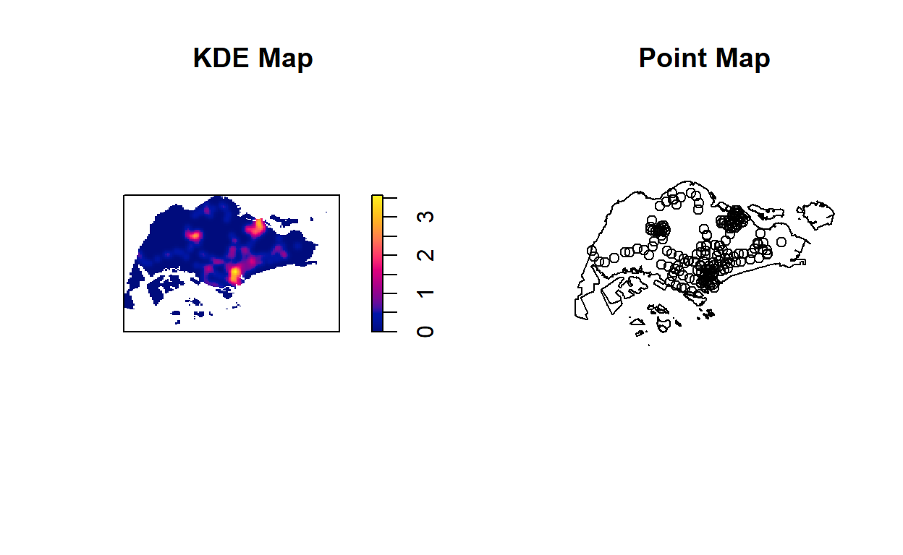
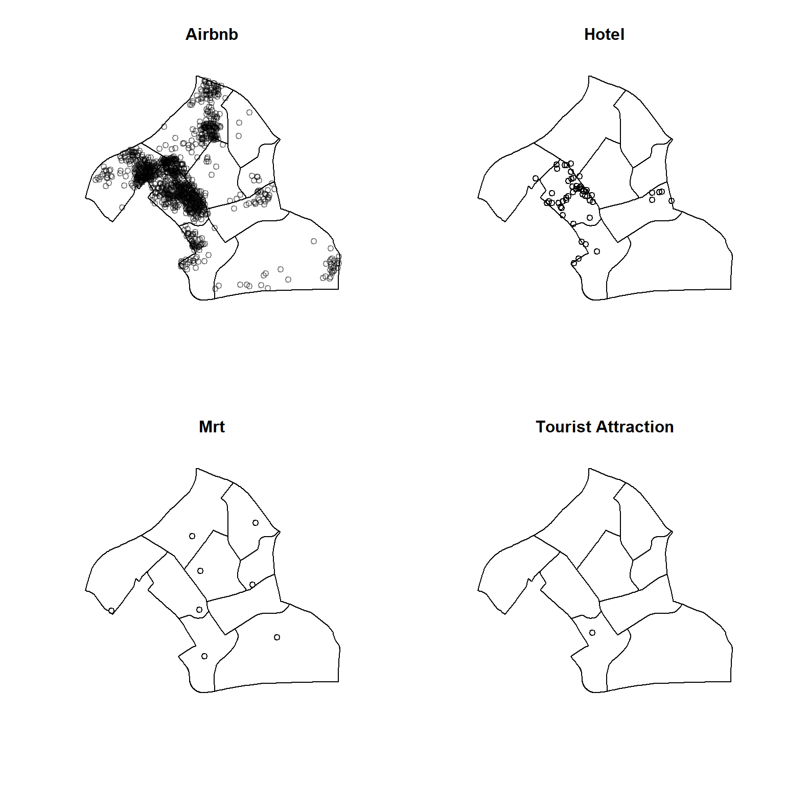
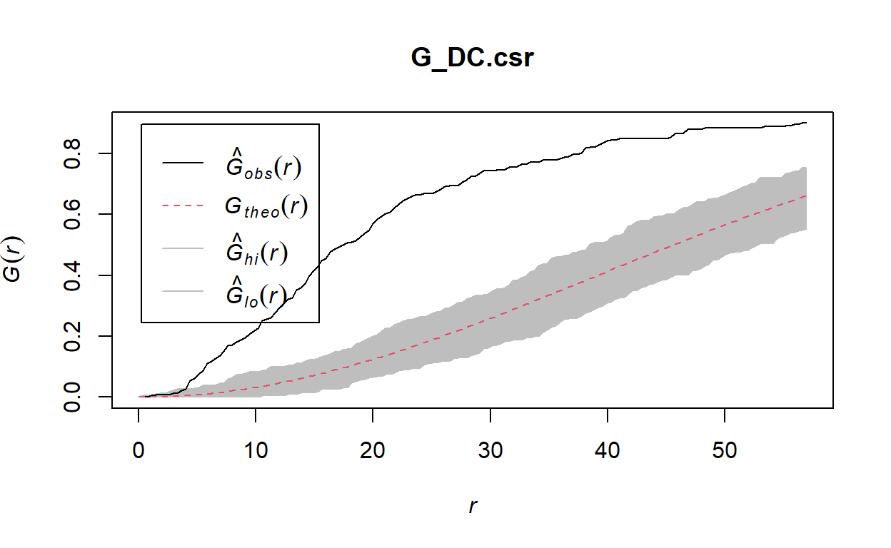
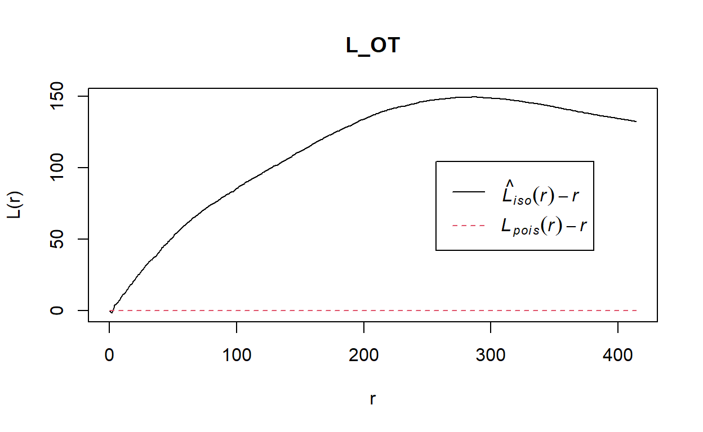
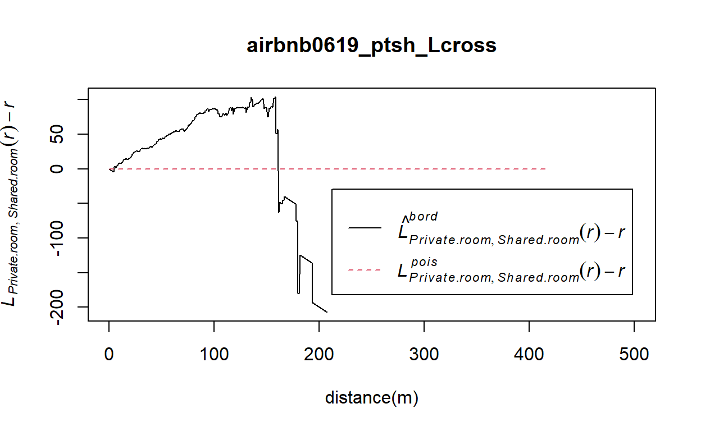
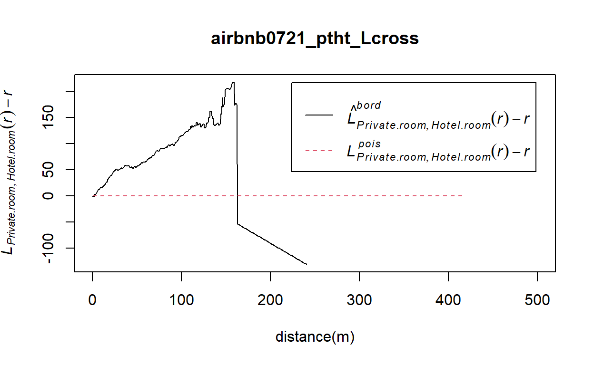
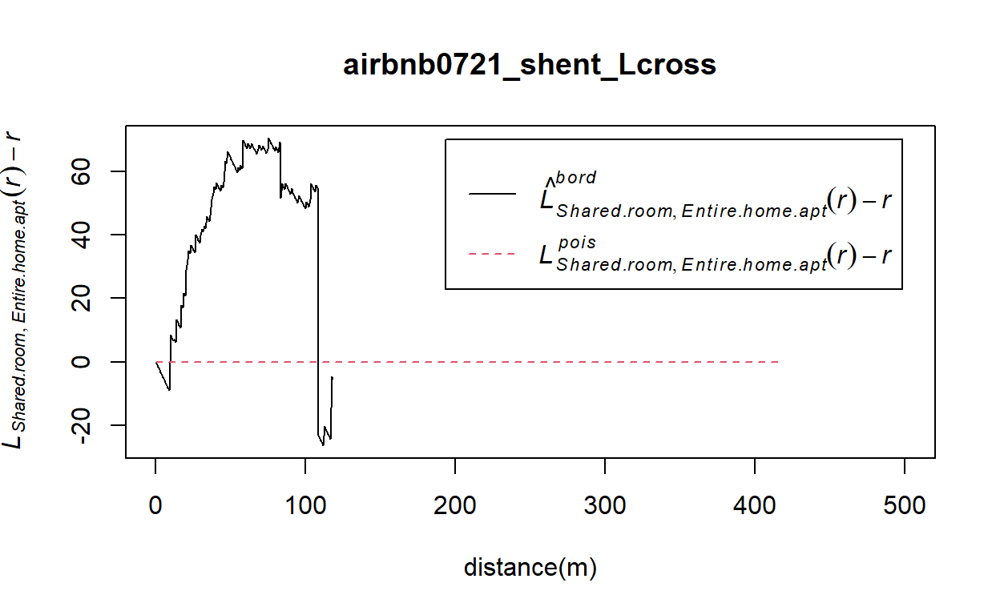
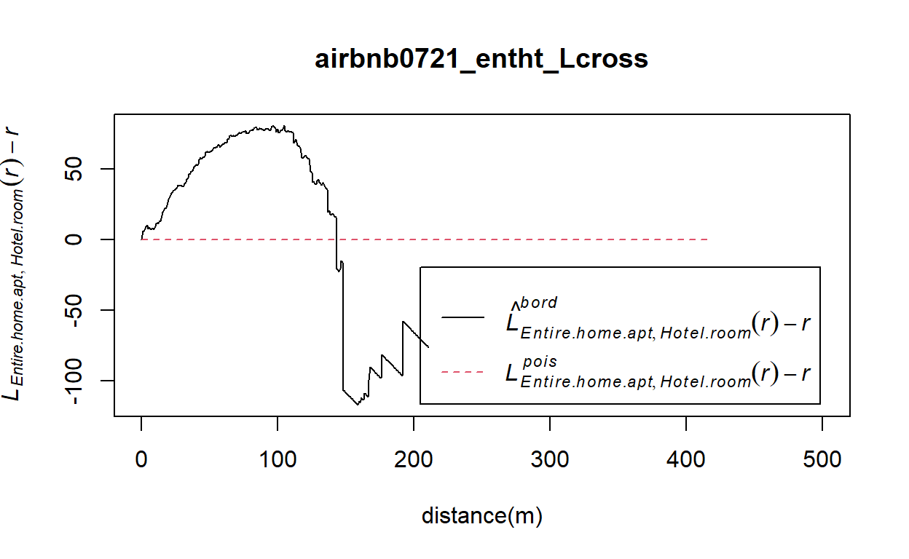
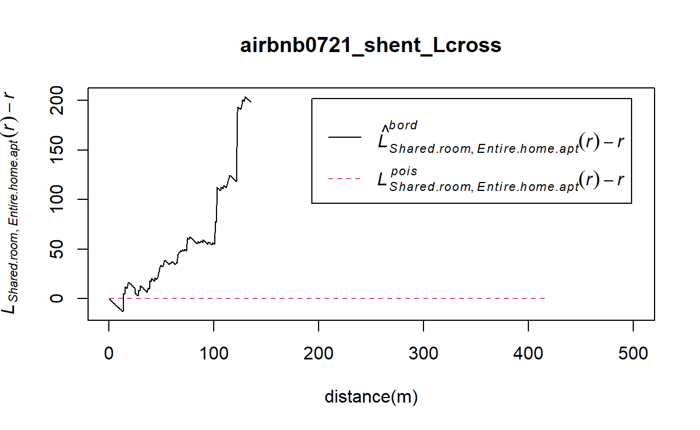

1 Introduction
Singapore is one of the global city that has yet to legalise short-term rentals offered by platforms such as Airbnb. However, there are data sets of Airbnb in Singapore, and they can be found from the Inside Airbnb website (http://insideairbnb.com/about.html). Hence, we are interested to analyse Airbnb in Singapore.
This analysis consist of two sections:
Section A: Airbnb Distribution in 2019
Section B: Impact of COVID-19
2 Data
- Airbnb Listings (June 2019 & July 2021) is the Airbnb Listing in Singapore for the year 2019 and 2021. It is in csv format, and can be taken from http://insideairbnb.com/get-the-data.html
- Hotels data is the list of hotels in Singapore. It is in csv format, and can be extracted from SLA OneMap Service using onemapsapi.
- Tourist Attractions data is the list of tourist attractions in Singapore. It is in csv format, and can be extracted from SLA OneMap Service using onemapsapi.
- MrtLrtStnPtt contains all the Mrt and Lrt stations in Singapore. It is in ESRI shapefile format, and can be taken from https://datamall.lta.gov.sg/
- MP14_SUBZONE_WEB_PL is URA 2014 Master Plan Planning Subzone boundary data. It is in ESRI shapefile format, and can be taken from https://www.data.gov.sg/.
- CostalOutline is the national boundary of Singapore. It is in ESRI shapefile format, and can taken from SLA website.
3 Setting Up the Environment
The following code chunk install the following packages:
- maptools to convert Spatial objects into ppp format
- sf to handle geospatial data
- raster to convert image output generate by spatstat into raster format.
- spatstat to perform 1st and 2nd-order spatial point patterns analysis and derive kernel density estimation (KDE) layer
- tmap to create choropleth maps
- tidyr to tidy messy data
- readr to import csv
- osmdata to get bounding box of a given location name
- tmaptools to read open street map data
Show code
packages = c('maptools', 'sf', 'raster','spatstat', 'tmap', 'tidyr', 'readr', 'osmdata', 'tmaptools')
for (p in packages){
if(!require(p, character.only = T)){
install.packages(p)
}
library(p,character.only = T)
}
4 Spatial Data Wrangling
4.1 Importing Geospatial Data
4.1.1 MrtLrt
4.1.1.1 Importing
The following code uses st_read function of sf package to import MrtLrt geospatial data sets.
Show code
mrtlrt_sf <- st_read(dsn = "data/geospatial", layer="MRTLRTStnPtt")
Reading layer `MRTLRTStnPtt' from data source
`C:\kwekyichen\IS415_blog\_posts\2021-09-16-takehome-ex02\data\geospatial'
using driver `ESRI Shapefile'
Simple feature collection with 185 features and 3 fields
Geometry type: POINT
Dimension: XY
Bounding box: xmin: 6138.311 ymin: 27555.06 xmax: 45254.86 ymax: 47854.2
Projected CRS: SVY21The MrtLrt data have 185 features with 3 fields. The projected CRS is SVY21. The geometry type is point.
4.1.1.2 Check CRS
Next, we use st_crs function of sf package to check the CRS.
Show code
st_crs(mrtlrt_sf)
Coordinate Reference System:
User input: SVY21
wkt:
PROJCRS["SVY21",
BASEGEOGCRS["SVY21[WGS84]",
DATUM["World Geodetic System 1984",
ELLIPSOID["WGS 84",6378137,298.257223563,
LENGTHUNIT["metre",1]],
ID["EPSG",6326]],
PRIMEM["Greenwich",0,
ANGLEUNIT["Degree",0.0174532925199433]]],
CONVERSION["unnamed",
METHOD["Transverse Mercator",
ID["EPSG",9807]],
PARAMETER["Latitude of natural origin",1.36666666666667,
ANGLEUNIT["Degree",0.0174532925199433],
ID["EPSG",8801]],
PARAMETER["Longitude of natural origin",103.833333333333,
ANGLEUNIT["Degree",0.0174532925199433],
ID["EPSG",8802]],
PARAMETER["Scale factor at natural origin",1,
SCALEUNIT["unity",1],
ID["EPSG",8805]],
PARAMETER["False easting",28001.642,
LENGTHUNIT["metre",1],
ID["EPSG",8806]],
PARAMETER["False northing",38744.572,
LENGTHUNIT["metre",1],
ID["EPSG",8807]]],
CS[Cartesian,2],
AXIS["(E)",east,
ORDER[1],
LENGTHUNIT["metre",1,
ID["EPSG",9001]]],
AXIS["(N)",north,
ORDER[2],
LENGTHUNIT["metre",1,
ID["EPSG",9001]]]]From the result above, even though the mrtlrt_sf is projected in svy21, the last line indicates that the EPSG is 9001. It is wrong because the correct EPSG code for svy21 should be 3414.
4.1.1.3 Assign EPSG code to a simple feature data frame
The following code chunk will assign the correct EPSG code to mrtlrt_sf using st_set_crs function of sf package
Show code
mrtlrt_sf <- st_set_crs(mrtlrt_sf, 3414)
Now that we have assign the correct EPSG code to mrtlrt_sf, we will check the CRS again using st_crs function of sf
4.1.1.4 Check CRS again
Show code
st_crs(mrtlrt_sf)
Coordinate Reference System:
User input: EPSG:3414
wkt:
PROJCRS["SVY21 / Singapore TM",
BASEGEOGCRS["SVY21",
DATUM["SVY21",
ELLIPSOID["WGS 84",6378137,298.257223563,
LENGTHUNIT["metre",1]]],
PRIMEM["Greenwich",0,
ANGLEUNIT["degree",0.0174532925199433]],
ID["EPSG",4757]],
CONVERSION["Singapore Transverse Mercator",
METHOD["Transverse Mercator",
ID["EPSG",9807]],
PARAMETER["Latitude of natural origin",1.36666666666667,
ANGLEUNIT["degree",0.0174532925199433],
ID["EPSG",8801]],
PARAMETER["Longitude of natural origin",103.833333333333,
ANGLEUNIT["degree",0.0174532925199433],
ID["EPSG",8802]],
PARAMETER["Scale factor at natural origin",1,
SCALEUNIT["unity",1],
ID["EPSG",8805]],
PARAMETER["False easting",28001.642,
LENGTHUNIT["metre",1],
ID["EPSG",8806]],
PARAMETER["False northing",38744.572,
LENGTHUNIT["metre",1],
ID["EPSG",8807]]],
CS[Cartesian,2],
AXIS["northing (N)",north,
ORDER[1],
LENGTHUNIT["metre",1]],
AXIS["easting (E)",east,
ORDER[2],
LENGTHUNIT["metre",1]],
USAGE[
SCOPE["Cadastre, engineering survey, topographic mapping."],
AREA["Singapore - onshore and offshore."],
BBOX[1.13,103.59,1.47,104.07]],
ID["EPSG",3414]]From the result above, we have successfully assign EPSG 3414 to mrtlrt_sf.
4.1.2 CostalOutline
4.1.2.1 Importing
The following code uses st_read function of sf package to import CostalOutline geospatial data sets.
Show code
sg_sf <- st_read(dsn = "data/geospatial", layer="CostalOutline")
Reading layer `CostalOutline' from data source
`C:\kwekyichen\IS415_blog\_posts\2021-09-16-takehome-ex02\data\geospatial'
using driver `ESRI Shapefile'
Simple feature collection with 60 features and 4 fields
Geometry type: POLYGON
Dimension: XY
Bounding box: xmin: 2663.926 ymin: 16357.98 xmax: 56047.79 ymax: 50244.03
Projected CRS: SVY21The CostalOutline data have 60 features with 4 fields. The projected CRS is SVY21. The geometry type is polygon.
4.1.2.2 Check CRS
Next, we use st_crs function of sf package to check the CRS.
Show code
st_crs(sg_sf)
Coordinate Reference System:
User input: SVY21
wkt:
PROJCRS["SVY21",
BASEGEOGCRS["SVY21[WGS84]",
DATUM["World Geodetic System 1984",
ELLIPSOID["WGS 84",6378137,298.257223563,
LENGTHUNIT["metre",1]],
ID["EPSG",6326]],
PRIMEM["Greenwich",0,
ANGLEUNIT["Degree",0.0174532925199433]]],
CONVERSION["unnamed",
METHOD["Transverse Mercator",
ID["EPSG",9807]],
PARAMETER["Latitude of natural origin",1.36666666666667,
ANGLEUNIT["Degree",0.0174532925199433],
ID["EPSG",8801]],
PARAMETER["Longitude of natural origin",103.833333333333,
ANGLEUNIT["Degree",0.0174532925199433],
ID["EPSG",8802]],
PARAMETER["Scale factor at natural origin",1,
SCALEUNIT["unity",1],
ID["EPSG",8805]],
PARAMETER["False easting",28001.642,
LENGTHUNIT["metre",1],
ID["EPSG",8806]],
PARAMETER["False northing",38744.572,
LENGTHUNIT["metre",1],
ID["EPSG",8807]]],
CS[Cartesian,2],
AXIS["(E)",east,
ORDER[1],
LENGTHUNIT["metre",1,
ID["EPSG",9001]]],
AXIS["(N)",north,
ORDER[2],
LENGTHUNIT["metre",1,
ID["EPSG",9001]]]]Similarly, even though the sg_sf is projected in svy21, the last line indicates that the EPSG is 9001. It is wrong because the correct EPSG code for svy21 should be 3414.
4.1.2.3 Assign EPSG code to a simple feature data frame
The following code chunk will assign the correct EPSG code to sg_sf using st_set_crs function of sf package
Show code
sg_sf <- st_set_crs(sg_sf, 3414)
Now that we have assign the correct EPSG code to sg_sf, we will check the CRS again using st_crs function of sf
4.1.2.4 Check CRS again
Show code
st_crs(sg_sf)
Coordinate Reference System:
User input: EPSG:3414
wkt:
PROJCRS["SVY21 / Singapore TM",
BASEGEOGCRS["SVY21",
DATUM["SVY21",
ELLIPSOID["WGS 84",6378137,298.257223563,
LENGTHUNIT["metre",1]]],
PRIMEM["Greenwich",0,
ANGLEUNIT["degree",0.0174532925199433]],
ID["EPSG",4757]],
CONVERSION["Singapore Transverse Mercator",
METHOD["Transverse Mercator",
ID["EPSG",9807]],
PARAMETER["Latitude of natural origin",1.36666666666667,
ANGLEUNIT["degree",0.0174532925199433],
ID["EPSG",8801]],
PARAMETER["Longitude of natural origin",103.833333333333,
ANGLEUNIT["degree",0.0174532925199433],
ID["EPSG",8802]],
PARAMETER["Scale factor at natural origin",1,
SCALEUNIT["unity",1],
ID["EPSG",8805]],
PARAMETER["False easting",28001.642,
LENGTHUNIT["metre",1],
ID["EPSG",8806]],
PARAMETER["False northing",38744.572,
LENGTHUNIT["metre",1],
ID["EPSG",8807]]],
CS[Cartesian,2],
AXIS["northing (N)",north,
ORDER[1],
LENGTHUNIT["metre",1]],
AXIS["easting (E)",east,
ORDER[2],
LENGTHUNIT["metre",1]],
USAGE[
SCOPE["Cadastre, engineering survey, topographic mapping."],
AREA["Singapore - onshore and offshore."],
BBOX[1.13,103.59,1.47,104.07]],
ID["EPSG",3414]]We have successfully set the EPSG to 3414 for sg_sf.
4.1.3 MPSZ
4.1.3.1 Importing
The following code uses st_read function of sf package to import MP14_SUBZONE_WEB_PL geospatial data sets.
Show code
mpsz_sf <- st_read(dsn = "data/geospatial", layer = "MP14_SUBZONE_WEB_PL")
Reading layer `MP14_SUBZONE_WEB_PL' from data source
`C:\kwekyichen\IS415_blog\_posts\2021-09-16-takehome-ex02\data\geospatial'
using driver `ESRI Shapefile'
Simple feature collection with 323 features and 15 fields
Geometry type: MULTIPOLYGON
Dimension: XY
Bounding box: xmin: 2667.538 ymin: 15748.72 xmax: 56396.44 ymax: 50256.33
Projected CRS: SVY21The mpsz data have 323 features with 15 fields. The projected CRS is SVY21. The geometry type is multipolygon.
4.1.3.2 Check CRS
Next, we use st_crs function of sf package to check the CRS.
Show code
st_crs(mpsz_sf)
Coordinate Reference System:
User input: SVY21
wkt:
PROJCRS["SVY21",
BASEGEOGCRS["SVY21[WGS84]",
DATUM["World Geodetic System 1984",
ELLIPSOID["WGS 84",6378137,298.257223563,
LENGTHUNIT["metre",1]],
ID["EPSG",6326]],
PRIMEM["Greenwich",0,
ANGLEUNIT["Degree",0.0174532925199433]]],
CONVERSION["unnamed",
METHOD["Transverse Mercator",
ID["EPSG",9807]],
PARAMETER["Latitude of natural origin",1.36666666666667,
ANGLEUNIT["Degree",0.0174532925199433],
ID["EPSG",8801]],
PARAMETER["Longitude of natural origin",103.833333333333,
ANGLEUNIT["Degree",0.0174532925199433],
ID["EPSG",8802]],
PARAMETER["Scale factor at natural origin",1,
SCALEUNIT["unity",1],
ID["EPSG",8805]],
PARAMETER["False easting",28001.642,
LENGTHUNIT["metre",1],
ID["EPSG",8806]],
PARAMETER["False northing",38744.572,
LENGTHUNIT["metre",1],
ID["EPSG",8807]]],
CS[Cartesian,2],
AXIS["(E)",east,
ORDER[1],
LENGTHUNIT["metre",1,
ID["EPSG",9001]]],
AXIS["(N)",north,
ORDER[2],
LENGTHUNIT["metre",1,
ID["EPSG",9001]]]]Similarly, even though the mpsz_sf is projected in svy21, the last line indicates that the EPSG is 9001. It is wrong because the correct EPSG code for svy21 should be 3414.
4.1.3.3 Assign EPSG code to a simple feature data frame
The following code chunk will assign the correct EPSG code to mpsz_sf using st_set_crs function of sf package
Show code
mpsz_sf <- st_set_crs(mpsz_sf, 3414)
Now that we have assign the correct EPSG code to mpsz_sf, we will check the CRS again using st_crs function of sf
4.1.3.4 Check CRS again
Show code
st_crs(mpsz_sf)
Coordinate Reference System:
User input: EPSG:3414
wkt:
PROJCRS["SVY21 / Singapore TM",
BASEGEOGCRS["SVY21",
DATUM["SVY21",
ELLIPSOID["WGS 84",6378137,298.257223563,
LENGTHUNIT["metre",1]]],
PRIMEM["Greenwich",0,
ANGLEUNIT["degree",0.0174532925199433]],
ID["EPSG",4757]],
CONVERSION["Singapore Transverse Mercator",
METHOD["Transverse Mercator",
ID["EPSG",9807]],
PARAMETER["Latitude of natural origin",1.36666666666667,
ANGLEUNIT["degree",0.0174532925199433],
ID["EPSG",8801]],
PARAMETER["Longitude of natural origin",103.833333333333,
ANGLEUNIT["degree",0.0174532925199433],
ID["EPSG",8802]],
PARAMETER["Scale factor at natural origin",1,
SCALEUNIT["unity",1],
ID["EPSG",8805]],
PARAMETER["False easting",28001.642,
LENGTHUNIT["metre",1],
ID["EPSG",8806]],
PARAMETER["False northing",38744.572,
LENGTHUNIT["metre",1],
ID["EPSG",8807]]],
CS[Cartesian,2],
AXIS["northing (N)",north,
ORDER[1],
LENGTHUNIT["metre",1]],
AXIS["easting (E)",east,
ORDER[2],
LENGTHUNIT["metre",1]],
USAGE[
SCOPE["Cadastre, engineering survey, topographic mapping."],
AREA["Singapore - onshore and offshore."],
BBOX[1.13,103.59,1.47,104.07]],
ID["EPSG",3414]]We have successfully assign ESPG 3414 to mpsz_sf.
4.2 Importing Aspatial Data
4.2.1 Hotel
4.2.1.1 Importing
The following code uses read_csv function of readr package to import Hotel aspatial data sets.
Show code
hotels <- read_csv("data/aspatial/hotels.csv")
4.2.1.2 Examine the file
The following code uses list function of base R to examine the imported file
Show code
list(hotels)
[[1]]
# A tibble: 422 x 9
NAME ADDRESSPOSTALCODE ADDRESSSTREETNAME HYPERLINK TOTALROOMS
<chr> <dbl> <chr> <chr> <dbl>
1 Jayleen~ 59390 25 New Bridge Ro~ jayleencla~ 20
2 JEN Sin~ 238858 277 Orchard Road~ singaporeo~ 499
3 JEN Sin~ 249716 1A Cuscaden Road singaporet~ 565
4 JH HOTEL 399041 8 LORONG 10 GEYL~ anguskt@gm~ 42
5 Ji Hote~ 238485 11 PENANG LANE I~ <NA> 81
6 Jin Don~ 399007 33 Lorong 12 Gey~ <NA> 33
7 Joyfor ~ 389226 135 Geylang Road joyfor.sg@~ 17
8 JW Marr~ 189763 30 Beach Road jw.sinjw.c~ 634
9 K Hotel 399199 44 LORONG 6 GEYL~ <NA> 56
10 Holiday~ 423371 88 EAST COAST RO~ <NA> 451
# ... with 412 more rows, and 4 more variables: KEEPERNAME <chr>,
# Lat <dbl>, Lng <dbl>, ICON_NAME <chr>The data contains 422 rows and 9 columns. There are Lat and Lng column for coordinates. They are in decimal degree format, hence we will assume the data is wgs84.
We will next check if there are any NA value in Lat and Lng using is.na function of base R package.
We can confirmed that there are no NA values and we can proceed to create a simple feature data frame.
4.2.1.3 Create simple feature data frame from aspatial data
The following code chunk
convert hotels data into simple feature data frame using st_as_sf feature of sf package.
Lng and Lat column are set as the coords arguments.
CRS were set as 4326 since we assumed that the data is wgs84
st_transform function of sf package then helps to transform the newly created simple feature data frame into svy21
tm_shape and tm_dots function of tmap plots the transformed hotels_sf
Show code
hotels_sf <- st_as_sf(hotels,
coords = c("Lng",
"Lat"),
crs=4326) %>%
st_transform(crs = 3414)
tm_shape(hotels_sf)+
tm_dots()

4.2.2 Tourism
4.2.2.1 Importing
The following code uses read_csv function of readr package to import Tourism aspatial data sets.
Show code
tourism <- read_csv("data/aspatial/tourism.csv")
4.2.2.2 Examine the file
The following code uses list function of base R to examine the imported file
Show code
list(tourism)
[[1]]
# A tibble: 107 x 17
NAME DESCRIPTION ADDRESSSTREETNA~ HYPERLINK PHOTOURL URL_PATH
<chr> <chr> <chr> <chr> <chr> <chr>
1 China~ Experience ~ 48 Pagoda Street http://ww~ www.your~ www.your~
2 Thian~ Beautifully~ 158 Telok Ayer ~ http://ww~ www.your~ www.your~
3 Euras~ This engagi~ 139 Ceylon Road http://ww~ www.your~ www.your~
4 Shoph~ With many b~ <NA> <NA> www.your~ www.your~
5 Capit~ The queen o~ 11 Stamford Road http://ww~ www.your~ www.your~
6 Espla~ This boldly~ 1 Esplanade Dri~ http://ww~ www.your~ www.your~
7 Garde~ The lush an~ 18 Marina Garde~ http://ww~ www.your~ www.your~
8 The I~ Theres mor~ 180-226 Depot R~ http://ww~ <NA> www.your~
9 PARKR~ PARKROYAL o~ 3 Upper Pickeri~ http://ww~ www.your~ www.your~
10 Lasal~ How can som~ 1 McNally Street https://w~ www.your~ www.your~
# ... with 97 more rows, and 11 more variables: IMAGE_ALT_TEXT <chr>,
# PHOTOCREDITS <chr>, LASTMODIFIED <dttm>, LATITUDE <dbl>,
# LONGTITUDE <dbl>, META_DESCRIPTION <chr>, OPENING_HOURS <chr>,
# Lat <dbl>, Lng <dbl>, ICON_NAME <chr>, ADDRESSPOSTALCODE <dbl>The tourism data contains 107 rows and 17 columns. There are LATITUDE and LONGTITUDE column, as well as Lat and Lng coluumn for coordinates. We will be using LATITUDE and LONGTITUDE column since they are the same. They are in decimal degree format, hence we will assume the data is wgs84.
We will next check if there are any NA value in LATITUDE and LONGTITUDE using is.na function of base R package.
There are NA values and we will need to drop them before creating a simple feature data frame.
The following code chunk drop rows of data as long as the LATITUDE is NA.
Show code
tourism <- tourism %>%
drop_na("LATITUDE")
4.2.2.3 Create simple feature data frame from aspatial data
The following code chunk is similar to the previous when we convert hotels aspatial data to sf. The LONGTITUDE and LATITUDE column are set as the coords arguments.
Show code
tourism_sf <- st_as_sf(tourism,
coords = c("LONGTITUDE",
"LATITUDE"),
crs=4326) %>%
st_transform(crs = 3414)
tm_shape(tourism_sf)+
tm_dots()

4.2.3 Airbnb0619
4.2.3.1 Importing
The following code uses read_csv function of readr package to import Airbnb listings30062019.csv aspatial data sets.
Show code
airbnb0619 <- read_csv("data/aspatial/listings30062019.csv")
4.2.3.2 Examine the file
The following code uses list function of base R to examine the imported file
Show code
list(airbnb0619)
[[1]]
# A tibble: 8,293 x 16
id name host_id host_name neighbourhood_g~ neighbourhood
<dbl> <chr> <dbl> <chr> <chr> <chr>
1 49091 "COZICOMFO~ 266763 Francesca North Region Woodlands
2 50646 "Pleasant ~ 227796 Sujatha Central Region Bukit Timah
3 56334 "COZICOMFO~ 266763 Francesca North Region Woodlands
4 71609 "Ensuite R~ 367042 Belinda East Region Tampines
5 71896 "B&B Room~ 367042 Belinda East Region Tampines
6 71903 "Room 2-ne~ 367042 Belinda East Region Tampines
7 71907 "3rd level~ 367042 Belinda East Region Tampines
8 151547 "En-suite ~ 729617 Kanchuya Central Region Orchard
9 241503 "Long stay~ 1017645 Bianca East Region Bedok
10 241508 "Long stay~ 1017645 Bianca East Region Bedok
# ... with 8,283 more rows, and 10 more variables: latitude <dbl>,
# longitude <dbl>, room_type <chr>, price <dbl>,
# minimum_nights <dbl>, number_of_reviews <dbl>,
# last_review <date>, reviews_per_month <dbl>,
# calculated_host_listings_count <dbl>, availability_365 <dbl>The airbnb0619 data contains 8293 rows and 16 columns. There are latitude and longitude column for coordinates. They are in decimal degree format, hence we will assume the data is wgs84.
We will next check if there are any NA value in latitude and longitude using is.na function of base R package.
Since there are no NA values, we can proceed to create simple features data frame for airbnb0619
4.2.3.3 Create simple feature data frame from aspatial data
The following code chunk is similar to the previous when we convert hotels aspatial data to sf. The longitude and latitude column are set as the coords arguments.
Show code
airbnb0619_sf <- st_as_sf(airbnb0619,
coords = c("longitude",
"latitude"),
crs=4326) %>%
st_transform(crs = 3414)
tm_shape(airbnb0619_sf)+
tm_dots()

4.2.4 Airbnb0721
4.2.4.1 Importing
The following code uses read_csv function of readr package to import Airbnb listings19072021.csv aspatial data sets.
Show code
airbnb0721 <- read_csv("data/aspatial/listings19072021.csv")
4.2.4.2 Examine the file
The following code uses list function of base R to examine the imported file
Show code
list(airbnb0721)
[[1]]
# A tibble: 4,252 x 16
id name host_id host_name neighbourhood_g~ neighbourhood
<dbl> <chr> <dbl> <chr> <chr> <chr>
1 50646 Pleasant R~ 227796 Sujatha Central Region Bukit Timah
2 71609 Ensuite Ro~ 367042 Belinda East Region Tampines
3 71896 B&B Room ~ 367042 Belinda East Region Tampines
4 71903 Room 2-nea~ 367042 Belinda East Region Tampines
5 275343 Convenient~ 1439258 Joyce Central Region Bukit Merah
6 275344 15 mins to~ 1439258 Joyce Central Region Bukit Merah
7 294281 5 mins wal~ 1521514 Elizabeth Central Region Newton
8 301247 Nice room ~ 1552002 Rahul Central Region Geylang
9 324945 20 Mins to~ 1439258 Joyce Central Region Bukit Merah
10 330089 Accomo@ RE~ 1439258 Joyce Central Region Bukit Merah
# ... with 4,242 more rows, and 10 more variables: latitude <dbl>,
# longitude <dbl>, room_type <chr>, price <dbl>,
# minimum_nights <dbl>, number_of_reviews <dbl>,
# last_review <date>, reviews_per_month <dbl>,
# calculated_host_listings_count <dbl>, availability_365 <dbl>The airbnb0721 data contains 4252 rows and 16 columns, lesser than airbnb0619. There are latitude and longitude column for coordinates. They are in decimal degree format, hence we will assume the data is wgs84.
We will next check if there are any NA value in latitude and longitude using is.na function of base R package.
We can confirm that there are no latitude and longitude with NA value.
4.2.4.3 Create simple feature data frame from aspatial data
The following code chunk is similar to the previous when we convert hotels aspatial data to sf. The longitude and latitude column are set as the coords arguments.
Show code
airbnb0721_sf <- st_as_sf(airbnb0721,
coords = c("longitude",
"latitude"),
crs=4326) %>%
st_transform(crs = 3414)
tm_shape(airbnb0721_sf)+
tm_dots()

4.3 Geospatial Data wrangling
After importing geospatial and aspatial data, we will convert the simple feature data frame to sps Spatial* class.
4.3.1 Converting sf data frames to sps Spatial* class
The following code chunk converts all the geospatial data from simple feature data frame to sps Spatial* class using as_Spatial functions of sf package.
Show code
airbnb0619 <- as_Spatial(airbnb0619_sf)
airbnb0721 <- as_Spatial(airbnb0721_sf)
hotels <- as_Spatial(hotels_sf)
tourism <- as_Spatial(tourism_sf)
mrtlrt <- as_Spatial(mrtlrt_sf)
sg <- as_Spatial(sg_sf)
mpsz <- as_Spatial(mpsz_sf)
Check each Spatial* class
Show code
airbnb0619
class : SpatialPointsDataFrame
features : 8293
extent : 7215.566, 44098.31, 25166.35, 49226.35 (xmin, xmax, ymin, ymax)
crs : +proj=tmerc +lat_0=1.36666666666667 +lon_0=103.833333333333 +k=1 +x_0=28001.642 +y_0=38744.572 +ellps=WGS84 +towgs84=0,0,0,0,0,0,0 +units=m +no_defs
variables : 14
names : id, name, host_id, host_name, neighbourhood_group, neighbourhood, room_type, price, minimum_nights, number_of_reviews, last_review, reviews_per_month, calculated_host_listings_count, availability_365
min values : 49091, -, 23666, (Email hidden by Airbnb), Central Region, Ang Mo Kio, Entire home/apt, 0, 1, 0, 15656, 0.01, 1, 0
max values : 36053005, ZR2- NEW! Sunny & Modern Apt 4 mins to Orchard Rd, 271165196, Zuzana, West Region, Yishun, Shared room, 13999, 1000, 308, 18072, 12.09, 277, 365 Show code
airbnb0721
class : SpatialPointsDataFrame
features : 4252
extent : 7406.989, 43337.89, 25330, 48391.55 (xmin, xmax, ymin, ymax)
crs : +proj=tmerc +lat_0=1.36666666666667 +lon_0=103.833333333333 +k=1 +x_0=28001.642 +y_0=38744.572 +ellps=WGS84 +towgs84=0,0,0,0,0,0,0 +units=m +no_defs
variables : 14
names : id, name, host_id, host_name, neighbourhood_group, neighbourhood, room_type, price, minimum_nights, number_of_reviews, last_review, reviews_per_month, calculated_host_listings_count, availability_365
min values : 50646, !! CozyRoom@City Center,Little India,FarrerParkMRT, 23666, <U+4F73><U+4F73>, Central Region, Ang Mo Kio, Entire home/apt, 13, 1, 0, 15456, 0.01, 1, 0
max values : 51122424, Zimmer nah der MRT (Downtown Line), 411376818, Zuzu, West Region, Yishun, Shared room, 13400, 1000, 370, 18826, 77, 165, 365 Show code
hotels
class : SpatialPointsDataFrame
features : 422
extent : 5939.241, 45334.18, 25379.44, 44562.4 (xmin, xmax, ymin, ymax)
crs : +proj=tmerc +lat_0=1.36666666666667 +lon_0=103.833333333333 +k=1 +x_0=28001.642 +y_0=38744.572 +ellps=WGS84 +towgs84=0,0,0,0,0,0,0 +units=m +no_defs
variables : 7
names : NAME, ADDRESSPOSTALCODE, ADDRESSSTREETNAME, HYPERLINK, TOTALROOMS, KEEPERNAME, ICON_NAME
min values : 30 BENCOOLEN, 18956, 1 Bayfront Avenue, 96ytlim@gmail.com, 4, Adel Aramouni, hotel.gif
max values : YotelAir Singapore Changi Airport, 819666, 99 IRRAWADDY ROAD, # 22-00 ROYAL SQUARE AT NOVENA, zubair@dam.com.sg, 2561, Zhang YuanQing, hotel.gif Show code
tourism
class : SpatialPointsDataFrame
features : 106
extent : 11380.23, 43659.54, 22869.34, 47596.73 (xmin, xmax, ymin, ymax)
crs : +proj=tmerc +lat_0=1.36666666666667 +lon_0=103.833333333333 +k=1 +x_0=28001.642 +y_0=38744.572 +ellps=WGS84 +towgs84=0,0,0,0,0,0,0 +units=m +no_defs
variables : 15
names : NAME, DESCRIPTION, ADDRESSSTREETNAME, HYPERLINK, PHOTOURL, URL_PATH, IMAGE_ALT_TEXT, PHOTOCREDITS, LASTMODIFIED, META_DESCRIPTION, OPENING_HOURS, Lat, Lng, ICON_NAME, ADDRESSPOSTALCODE
min values : Adventure Cove Waterpark Singapore, A feat of engineering, an architectural statement and a sheer aesthetic triumph, Marina Bay Sands<sup></sup> has upped the ante for buildings in Singapore., 1 Beach Road, http://acm.org.sg/, /content/dam/desktop/global/see-do-singapore/architecture/hajjah-fatimah-mosque-carousel01-rect.jpg, www.yoursingapore.com/en/see-do-singapore/architecture/historical/capitol-building-singapore.html, Adults and kids of all ages who are not even science buffs will have fun at the Singapore Science Centre., Darren Soh/National Gallery, 1427691447.648, A tranquil patch of imperial China in the west of Singapore is pleasant respite from the bustle of the city., 50th storey Skybridge, Daily, 9am 10pm, 1.22309649975255, 103.683980000372, tourist_spot.gif, 0
max values : Victoria Theatre Singapore, With so many attractions packed into this 15-km stretch of beaches, youll never run out of things to do., Seng Poh Road and Tiong Bahru Road, https://www.pub.gov.sg/marinabarrage, www.yoursingapore.com/content/dam/desktop/global/see-do-singapore/recreation-leisure/universal-studios-singapore-carousel01-rect.jpg, www.yoursingapore.com/en/see-do-singapore/recreation-leisure/viewpoints/singapore-flyer.html, Whether you prefer water sports, rollerblading or cycling, find a myriad of things to do at East Coast Park, Singapore., Wildlife Reserves Singapore, 1446544541.364, With the Henderson Waves bridge, form meets function to stunning effect., Visits are by appointment only.Visitors must sign up in advance for heritage tours which fall on:Monday, 2pm 3pm,Tuesday, 6.30pm 7.30pm,Thursday, 10am 11am,Saturday, 11am 12pm, 1.44672000006097, 103.974030000359, tourist_spot.gif, 0 Show code
mrtlrt
class : SpatialPointsDataFrame
features : 185
extent : 6138.311, 45254.86, 27555.06, 47854.2 (xmin, xmax, ymin, ymax)
crs : +proj=tmerc +lat_0=1.36666666666667 +lon_0=103.833333333333 +k=1 +x_0=28001.642 +y_0=38744.572 +ellps=WGS84 +towgs84=0,0,0,0,0,0,0 +units=m +no_defs
variables : 3
names : OBJECTID, STN_NAME, STN_NO
min values : 0, ADMIRALTY MRT STATION, BP1
max values : 191, YISHUN MRT STATION, TE3 Show code
sg
class : SpatialPolygonsDataFrame
features : 60
extent : 2663.926, 56047.79, 16357.98, 50244.03 (xmin, xmax, ymin, ymax)
crs : +proj=tmerc +lat_0=1.36666666666667 +lon_0=103.833333333333 +k=1 +x_0=28001.642 +y_0=38744.572 +ellps=WGS84 +towgs84=0,0,0,0,0,0,0 +units=m +no_defs
variables : 4
names : GDO_GID, MSLINK, MAPID, COSTAL_NAM
min values : 1, 1, 0, ISLAND LINK
max values : 60, 67, 0, SINGAPORE - MAIN ISLAND Show code
mpsz
class : SpatialPolygonsDataFrame
features : 323
extent : 2667.538, 56396.44, 15748.72, 50256.33 (xmin, xmax, ymin, ymax)
crs : +proj=tmerc +lat_0=1.36666666666667 +lon_0=103.833333333333 +k=1 +x_0=28001.642 +y_0=38744.572 +ellps=WGS84 +towgs84=0,0,0,0,0,0,0 +units=m +no_defs
variables : 15
names : OBJECTID, SUBZONE_NO, SUBZONE_N, SUBZONE_C, CA_IND, PLN_AREA_N, PLN_AREA_C, REGION_N, REGION_C, INC_CRC, FMEL_UPD_D, X_ADDR, Y_ADDR, SHAPE_Leng, SHAPE_Area
min values : 1, 1, ADMIRALTY, AMSZ01, N, ANG MO KIO, AM, CENTRAL REGION, CR, 00F5E30B5C9B7AD8, 16409, 5092.8949, 19579.069, 871.554887798, 39437.9352703
max values : 323, 17, YUNNAN, YSSZ09, Y, YISHUN, YS, WEST REGION, WR, FFCCF172717C2EAF, 16409, 50424.7923, 49552.7904, 68083.9364708, 69748298.792 We can see that all the geospatial data are converted to their respective Spatial* Classes.
4.3.2 Converting the Spatial* class into generic sp format
Next, we will convert Spatial* classes into Spatial object so that we can convert it into ppp object.
The following code chunk converts Spatial* classes into generic sp format using as function which sets the classes to their respective sp format.
Show code
airbnb0619_sp <- as(airbnb0619, "SpatialPoints")
airbnb0721_sp <- as(airbnb0721, "SpatialPoints")
hotels_sp <- as(hotels, "SpatialPoints")
tourism_sp <- as(tourism, "SpatialPoints")
mrtlrt_sp <- as(mrtlrt, "SpatialPoints")
sg_sp <- as(sg, "SpatialPolygons")
mpsz_sp <- as(mpsz, "SpatialPolygons")
4.3.3 Converting the generic sp format into spatstats ppp format
We will next convert the spatial data into spatstats ppp format.
The following code chunk converts spatial data into spatstats ppp format using as function.
Show code
airbnb0619_ppp <- as(airbnb0619_sp, "ppp")
airbnb0721_ppp <- as(airbnb0721_sp, "ppp")
hotels_ppp <- as(hotels_sp, "ppp")
tourism_ppp <- as(tourism_sp, "ppp")
mrtlrt_ppp <- as(mrtlrt_sp, "ppp")
4.3.4 Handling duplicates in ppp object
4.3.4.1 Check for dupliciates duplicates in each ppp object
The following code chunk use any and duplicated function of base R package to check for duplicates, and sum up the count of duplicated points using sum function of base R package and multiplicity function of spatstat package.
Show code
any(duplicated(airbnb0619_ppp))
[1] TRUEShow code
sum(multiplicity(airbnb0619_ppp) > 1)
[1] 6From the result above, there are 6 duplicates in airbnb0619_ppp object.
Show code
any(duplicated(airbnb0721_ppp))
[1] TRUEShow code
sum(multiplicity(airbnb0721_ppp) > 1)
[1] 224From the result above, there are 224 duplicates in airbnb0721_ppp object.
From the result above, there are 10 duplicates in hotels_ppp object.
From the result above, there are 7 duplicates in tourism_ppp object.
From the result above, there are no duplicate in mrtlrt_ppp object.
4.3.4.2 Handling duplicates
We will use jittering to handle duplicates so that we will not lose useful points. Jittering adds a small perturbation to the duplicated points so that they do not occupy the exact same space.
The following code chunk uses rjitter function of spatstat to jitter the ppp object with duplicates.
Show code
airbnb0619_ppp_jit <- rjitter(airbnb0619_ppp,
retry=TRUE,
nsim=1,
drop=TRUE)
airbnb0721_ppp_jit <- rjitter(airbnb0721_ppp,
retry=TRUE,
nsim=1,
drop=TRUE)
hotels_ppp_jit <- rjitter(hotels_ppp,
retry=TRUE,
nsim=1,
drop=TRUE)
tourism_ppp_jit <- rjitter(tourism_ppp,
retry=TRUE,
nsim=1,
drop=TRUE)
4.3.4.3 Check if duplicates still exist
Show code
any(duplicated(airbnb0619_ppp_jit))
[1] FALSEShow code
sum(multiplicity(airbnb0619_ppp_jit) > 1)
[1] 0Show code
any(duplicated(airbnb0721_ppp_jit))
[1] FALSEShow code
sum(multiplicity(airbnb0721_ppp_jit) > 1)
[1] 0Show code
any(duplicated(hotels_ppp_jit))
[1] FALSEShow code
sum(multiplicity(hotels_ppp_jit) > 1)
[1] 0Show code
any(duplicated(tourism_ppp_jit))
[1] FALSEShow code
sum(multiplicity(tourism_ppp_jit) > 1)
[1] 0We can confirm that there are no duplicated points after jittering.
4.3.5 Create owin objects
We will next create owin object to represent the Singapore boundary.
The following code chunk converts sg SpatialPolygon objects into owin object of spatstat using as function.
Show code
sg_owin <- as(sg_sp, "owin")
The following code chunk plots sg_owin using plot function of base R package.
Show code
plot(sg_owin)

4.3.6 Combining point events object and owin object
The following code chunk combines the point objects of airbnb0619, airbnb0721, hotels, tourism and mrtlrt with the owin object into one ppp object class.
Show code
airbnb0619SG_ppp = airbnb0619_ppp_jit[sg_owin]
airbnb0721SG_ppp = airbnb0721_ppp_jit[sg_owin]
hotelsSG_ppp = hotels_ppp_jit[sg_owin]
tourismSG_ppp = tourism_ppp_jit[sg_owin]
mrtlrtSG_ppp = mrtlrt_ppp[sg_owin]
The following code chunk plots the ppp object class using plot function of base R package.
Show code
plot(airbnb0619SG_ppp)

Show code
plot(airbnb0721SG_ppp)

Show code
plot(hotelsSG_ppp)

Show code
plot(tourismSG_ppp)

Show code
plot(mrtlrtSG_ppp)

5 Section A: Airbnb Distribution in 2019
5.1 Exploratory Spatial Data Analysis
5.1.1 Kernel density maps
5.1.1.1 Airbnb0619 listings
5.1.1.1.1 Compute kernel density estimation with automatic bandwidth selection method
The following code chunk computes kernel density using density function of spatstat package.
The code first takes in the ppp object variable.
bw.diggle automatic bandwidth method to detect a tight cluster
smoothing kernel is set to default gaussian method
Show code
kde_airbnb0619SG_bw <- density(airbnb0619SG_ppp,
sigma=bw.diggle,
edge=TRUE,
kernel="gaussian")
The following code chunk plots the kde_airbnb0619SG_bw using plot function of base R
Show code
plot(kde_airbnb0619SG_bw)

The density values of the output range is too small because the default unit of measurement of svy21 is in meter. As a result, the density values computed is in number of units per square meter.
5.1.1.1.2 Rescalling KDE values
The following code chunk rescale the KDE value of airbnb0619SG_ppp using rescale function of spatstat from meter to kilometer.
Show code
airbnb0619SG_ppp.km <- rescale(airbnb0619SG_ppp, 1000, "km")
5.1.1.1.3 Different automatic bandwidth methods
The following code chunk calculate the bandwidth using different methods
Show code
bw.CvL(airbnb0619SG_ppp.km)
sigma
6.476653 Show code
bw.scott(airbnb0619SG_ppp.km)
sigma.x sigma.y
1.0748175 0.7425522 Show code
bw.ppl(airbnb0619SG_ppp.km)
sigma
0.1571736 Show code
bw.diggle(airbnb0619SG_ppp.km)
sigma
0.04196627 From the result above, bw.diggle has the lowest sigma compared to other methods. We will be using bw.diggle in this analysis in order to detect close cluster.
5.1.1.1.4 KDE Map and Point Map in km
The following code chunk computes kernel density using density function of spatstat package.
The code first takes in the ppp object variable in km.
bw.diggle automatic bandwidth method to detect a tight cluster
smoothing kernel is set to default gaussian method
plot function of base R package and par function of graphics package is used to plot kde map and ppp point map side by side
Show code

Analysis: From the kde map above, we can see that the south-east region near the central area have higher density of Airbnb in 2019 as shown by the pink spots on kde map and the black patches on the point map. The kde map better visualised the density as compared to the point map because it uses different colour tone to represent the density. For example, purple means no/low number of units per square kilometer, pink represents medium density of about 1000 units per square kilometer, and yellow means high density of about 1500 units per square kilometer. The point map on the other hand cannot determine if an area is denser than the other area since it is only represented in one colour tone, black, and black patches can be seen almost every where in the point map.
5.1.1.1.5 Convert KDE output into grid object in km
The following code chunk converts KDE output into grid object using as.SpatialGridDataFrame.im function of maptools, and plot the grid object using spplot function of raster package.
Show code
gridded_kde_airbnb0619SG_bw.km <- as.SpatialGridDataFrame.im(kde_airbnb0619SG_bw.km)
spplot(gridded_kde_airbnb0619SG_bw.km)

Analysis: The above density map shows a clearer visualization of the density of Airbnb in 2019 using grid. We can see that the Airbnb are scattered all around as seen by the lighter blue grid on the map. The south-east area near the central have higher density with around 500 - 1500 units per square kilometer, represented by the brighter blue, pink-orange grid on the map.
5.1.1.1.6 Convert grid object into raster
The following code chunk converts grid object into raster using raster function of raster package. Note that we will be using kde_airbnb0619SG_bw in m.
Show code
gridded_kde_airbnb0619SG_bw <- as.SpatialGridDataFrame.im(kde_airbnb0619SG_bw)
kde_airbnb0619SG_bw_raster <- raster(gridded_kde_airbnb0619SG_bw)
kde_airbnb0619SG_bw_raster
class : RasterLayer
dimensions : 128, 128, 16384 (nrow, ncol, ncell)
resolution : 417.0614, 264.7348 (x, y)
extent : 2663.926, 56047.79, 16357.98, 50244.03 (xmin, xmax, ymin, ymax)
crs : NA
source : memory
names : v
values : -2.055072e-19, 0.001811419 (min, max)From the result above, the crs is NA.
5.1.1.1.7 Assign project system and plot raster on osm
The following code chunk first assign CRS to kde_airbnb0619SG_bw_raster
Plot the raster on OpenstreetMap basemap in interactive mode
tmap_mode is set to view to plot interative map
tm_shape is the raster layer
tm_raster with setting of alpha = 0.7 makes the raster layer slightly transparent so that the basemap can be seen, palette set to Purples
tm_basemap is set to OpenStreetMap
tmap_mode change back to plot
Show code
projection(kde_airbnb0619SG_bw_raster) <- CRS("+init=EPSG:3414")
kde_airbnb0619SG_bw_raster
class : RasterLayer
dimensions : 128, 128, 16384 (nrow, ncol, ncell)
resolution : 417.0614, 264.7348 (x, y)
extent : 2663.926, 56047.79, 16357.98, 50244.03 (xmin, xmax, ymin, ymax)
crs : +proj=tmerc +lat_0=1.36666666666667 +lon_0=103.833333333333 +k=1 +x_0=28001.642 +y_0=38744.572 +ellps=WGS84 +units=m +no_defs
source : memory
names : v
values : -2.055072e-19, 0.001811419 (min, max)Show code
tmap_mode("view")
tm_shape(kde_airbnb0619SG_bw_raster) +
tm_raster("v", palette = "Purples", alpha = 0.7) +
tm_basemap("OpenStreetMap")
Show code
tmap_mode("plot")
Analysis: From the raster map, we can see that areas such as Geylang, Chinatown and Anson have the higher density of Airbnb with 0.0010 to 0.0020 units per square meter, as shown by the darker purple grid on the map. There are other areas such as Kallang have medium density of 0.0005 to 0.0010 units per square meter. We will look into these regions later.
5.1.1.2 Hotels
5.1.1.2.1 Rescale KDE values
The following code chunk rescale the KDE value of hotelsSG_ppp using rescale function of spatstat from meter to kilometer.
Show code
hotelsSG_ppp.km <- rescale(hotelsSG_ppp, 1000, "km")
5.1.1.2.2 KDE Map and Point Map in km
The following code chunk is similar to Airbnb0619s code chunk (5.1.1.1.4).
Show code

Analysis: From the kde map above, we can see that the south-east region near the central area have higher density of hotels of about 100 units per square kilometer, as shown by the pink orange spots on kde map. The black patches on the point map also concentrates around the south-east region near the central area.
5.1.1.2.3 Convert KDE output into grid object in km
The following code chunk converts KDE output into grid object using as.SpatialGridDataFrame.im function of maptools, and plot the grid object using spplot function of raster package.
Show code
gridded_kde_hotelsSG_bw.km <- as.SpatialGridDataFrame.im(kde_hotelsSG_bw.km)
spplot(gridded_kde_hotelsSG_bw.km)

Analysis: The above density map shows a clearer visualization of the density of hotels using grid. We can see that south-east area near the central have higher density of about 50 - 120 units per square kilometer as seen by the lighter blue and pink grid on the map. There are some hotels scattered near east area as well as shown by the individual blue grid.
5.1.1.2.4 Plot raster on osm
The following code chunk first compute kernel density using density function of spatstat package with sigma set as bw.diggle and kernel set as gaussian.
Note that we will be using ppp in m.
Convert KDE output into grid object using as.SpatialGridDataFrame.im function of maptools
Convert grid object into raster using raster function of raster package
Assign CRS to raster layer
Plot the raster on OpenstreetMap basemap in interactive mode
tmap_mode is set to view to plot interative map
tm_shape is the raster layer
tm_raster with setting of alpha = 0.7 makes the raster layer slightly transparent so that the basemap can be seen, palette set to Purples
tm_basemap is set to OpenStreetMap
tmap_mode change back to plot
Show code
kde_hotelsSG_bw <- density(hotelsSG_ppp,
sigma=bw.diggle,
edge=TRUE,
kernel="gaussian")
gridded_kde_hotelsSG_bw <- as.SpatialGridDataFrame.im(kde_hotelsSG_bw)
kde_hotelsSG_bw_raster <- raster(gridded_kde_hotelsSG_bw)
projection(kde_hotelsSG_bw_raster) <- CRS("+init=EPSG:3414")
tmap_mode("view")
tm_shape(kde_hotelsSG_bw_raster) +
tm_raster("v", palette = "Purples", alpha = 0.7) +
tm_basemap("OpenStreetMap")
Show code
tmap_mode("plot")
Analysis: From the raster map, we can see that areas such as Gelang and Clarke Quay have highest density of hotels with about 0.00015 to 0.00020 units per square meter. Areas like Rochor and Chinatown have high density of about 0.00005 to 0.00010 units per square meter.
5.1.1.3 MRTLRT
5.1.1.3.1 Rescale KDE values
The following code chunk rescale the KDE value of mrtlrtSG_ppp using rescale function of spatstat from meter to kilometer.
Show code
mrtlrtSG_ppp.km <- rescale(mrtlrtSG_ppp, 1000, "km")
5.1.1.3.2 KDE Map and Point Map in km
The following code chunk is similar to Airbnb0619s code chunk (5.1.1.1.4).
Show code

Analysis: From the kde map above, we can see that the mrt and lrt are available at almost every region. Area with higher density of MRT are North-East, North-West and Central South region with about 2 to 3 units per square kilometer, as shown by the pink orange patch on the kde map. The black patches on the point map also concentrates in these three region.
5.1.1.3.3 Convert KDE output into grid object in km
The following code chunk converts KDE output into grid object using as.SpatialGridDataFrame.im function of maptools, and plot the grid object using spplot function of raster package.
Show code
gridded_kde_mrtlrtSG_bw.km <- as.SpatialGridDataFrame.im(kde_mrtlrtSG_bw.km)
spplot(gridded_kde_mrtlrtSG_bw.km)

Analysis: The above density map shows a clearer visualization of the density of Mrt and Lrt using grid. We can see that the Mrt and Lrt are available almost every region in Singapore as represented by the light blue grid on the map. The north-east, north-west and central south area have higher density of Mrt and Lrt as seen by the pink to yellow grid cluster on the map. There are many regions with 1 units per square meter as shown by blue green.
5.1.1.3.4 Plot raster on osm
The following code chunk is similar to Hotels (5.1.1.2.4)
Show code
kde_mrtlrtSG_bw <- density(mrtlrtSG_ppp,
sigma=bw.diggle,
edge=TRUE,
kernel="gaussian")
gridded_kde_mrtlrtSG_bw <- as.SpatialGridDataFrame.im(kde_mrtlrtSG_bw)
kde_mrtlrtSG_bw_raster <- raster(gridded_kde_mrtlrtSG_bw)
projection(kde_mrtlrtSG_bw_raster) <- CRS("+init=EPSG:3414")
tmap_mode("view")
tm_shape(kde_mrtlrtSG_bw_raster) +
tm_raster("v", palette = "Purples", alpha = 0.7) +
tm_basemap("OpenStreetMap")
Show code
tmap_mode("plot")
Analysis: From the raster map above, we can confirm that North-east, North-west and Central south area have higher density of Mrt and Lrt of about 0.000002 to 0.000003 units per square meter, as shown by the purple grid on the map.
5.1.1.4 Tourist Attractions
5.1.1.4.1 Rescale KDE values
The following code chunk rescale the KDE value of mrtlrtSG_ppp using rescale function of spatstat from meter to kilometer.
Show code
tourismSG_ppp.km <- rescale(tourismSG_ppp, 1000, "km")
5.1.1.4.2 KDE Map and Point Map in km
The following code chunk is similar to Airbnb0619s code chunk (5.1.1.1.4).
Analysis: From the kde map above, we can see that the south-east region near the central area have higher density of tourist attraction as shown on the pink-yellow spots with about 10 - 20 units per square kilometer. In the point map, the black patches also concentrates at the south-east region near central, with some individual attraction in north, west and east as shown by the individual point.
5.1.1.4.3 Convert KDE output into grid object in km
The following code chunk converts KDE output into grid object using as.SpatialGridDataFrame.im function of maptools, and plot the grid object using spplot function of raster package.
Show code
gridded_kde_tourismSG_bw.km <- as.SpatialGridDataFrame.im(kde_tourismSG_bw.km)
spplot(gridded_kde_tourismSG_bw.km)

Analysis: The above density map shows a clearer visualization of the density of tourist attraction in Singapore using grid. We can see that there are a few attractions in the north, west and east as seen by the light blue grid on the map. The south central area have high density of tourist attractions as seen by the pink yellow grid on the map with about 10 to 20 units per square meter.
5.1.1.4.4 Plot raster on osm
The following code chunk is similar to Hotels (5.1.1.2.4)
Show code
kde_tourismSG_bw <- density(tourismSG_ppp,
sigma=bw.diggle,
edge=TRUE,
kernel="gaussian")
gridded_kde_tourismSG_bw <- as.SpatialGridDataFrame.im(kde_tourismSG_bw)
kde_tourismSG_bw_raster <- raster(gridded_kde_tourismSG_bw)
projection(kde_tourismSG_bw_raster) <- CRS("+init=EPSG:3414")
tmap_mode("view")
tm_shape(kde_tourismSG_bw_raster) +
tm_raster("v", palette = "Purples", alpha = 0.7) +
tm_basemap("OpenStreetMap")
Show code
tmap_mode("plot")
Analysis: From the raster map above, we can confirm the the south-east area near central region have highest density of tourist attraction with about 0.000020 to 0.000025 units per square meter as shown by the dark purple grid on the map.
5.1.1.5 Comparison between Airbnb0619, Hotels, MRTLRT and Tourist Attractions
5.1.1.5.1 KDE Map Comparison
The following code chunk plots the KDE map of Airbnb 2019, Hotel, MRTLRT and Tourist Attractions side by side using par functions of graphics package
Show code

From the above, we can see that the common area with high density (in red and yellow) of Airbnb, hotel, mrt and tourist attraction are concentrated around the south east area near the central region.
5.1.1.6 Comparing Spatial Point Patterns using KDE
From the Airbnb kde map above, we noticed that areas such as Kallang, Geylang, Chinatown and Anson have a higher density as shown by the darker purple grid. Hence, we will look into these areas.
Subzone Kallang = Planning Area Kallang
Subzone Geylang = Planning Area Geylang
Subzone Chinatown = Planning Area Outram
Subzone Anson = Planning Area Downtown Core
5.1.1.6.1 Extract Study Area
The following code chunk extracts the target areas (Kallang, Geylang, Outram, Downtown Core).
Show code
kl = mpsz[mpsz@data$PLN_AREA_N == "KALLANG",]
gl = mpsz[mpsz@data$PLN_AREA_N == "GEYLANG",]
ot = mpsz[mpsz@data$PLN_AREA_N == "OUTRAM",]
dc = mpsz[mpsz@data$PLN_AREA_N == "DOWNTOWN CORE",]
5.1.1.6.2 Plot target areas
The following code chunk plots the target areas side by side in 2x2 using par function of graphics package and plot functions of base R package.
Show code

5.1.1.6.3 Convert Spatial Polygons Data Fraeme into generic SP format
The following code chunk converts the four SpatialPolygonsDataFrame layers into generic spatialpolygons layers.
Show code
kl_sp = as(kl, "SpatialPolygons")
gl_sp = as(gl, "SpatialPolygons")
ot_sp = as(ot, "SpatialPolygons")
dc_sp = as(dc, "SpatialPolygons")
5.1.1.6.4 Create owin object for each target area
The following code chunk convert the SpatialPolygons objects into owin objects required by spatstat.
Show code
kl_owin = as(kl_sp, "owin")
gl_owin = as(gl_sp, "owin")
ot_owin = as(ot_sp, "owin")
dc_owin = as(dc_sp, "owin")
5.1.1.6.5 Combine airnbnb0619, hotels, mrt, tourist attractions points with owin of each target area
The following code chunk extracts airnbnb0619, hotels, mrt and tourist attractions within each specific region.
Show code
airbnb0619_kl_ppp = airbnb0619_ppp_jit[kl_owin]
airbnb0619_gl_ppp = airbnb0619_ppp_jit[gl_owin]
airbnb0619_ot_ppp = airbnb0619_ppp_jit[ot_owin]
airbnb0619_dc_ppp = airbnb0619_ppp_jit[dc_owin]
hotels_kl_ppp = hotels_ppp_jit[kl_owin]
hotels_gl_ppp = hotels_ppp_jit[gl_owin]
hotels_ot_ppp = hotels_ppp_jit[ot_owin]
hotels_dc_ppp = hotels_ppp_jit[dc_owin]
mrtlrt_kl_ppp = mrtlrt_ppp[kl_owin]
mrtlrt_gl_ppp = mrtlrt_ppp[gl_owin]
mrtlrt_ot_ppp = mrtlrt_ppp[ot_owin]
mrtlrt_dc_ppp = mrtlrt_ppp[dc_owin]
tourism_kl_ppp = tourism_ppp_jit[kl_owin]
tourism_gl_ppp = tourism_ppp_jit[gl_owin]
tourism_ot_ppp = tourism_ppp_jit[ot_owin]
tourism_dc_ppp = tourism_ppp_jit[dc_owin]
5.1.1.6.6 Rescale from m to km
The following code chunk transform the unit from m to km using rescale function.
Show code
airbnb0619_kl_ppp.km = rescale(airbnb0619_kl_ppp, 1000, "km")
airbnb0619_gl_ppp.km = rescale(airbnb0619_gl_ppp, 1000, "km")
airbnb0619_ot_ppp.km = rescale(airbnb0619_ot_ppp, 1000, "km")
airbnb0619_dc_ppp.km = rescale(airbnb0619_dc_ppp, 1000, "km")
hotels_kl_ppp.km = rescale(hotels_kl_ppp, 1000, "km")
hotels_gl_ppp.km = rescale(hotels_gl_ppp, 1000, "km")
hotels_ot_ppp.km = rescale(hotels_ot_ppp, 1000, "km")
hotels_dc_ppp.km = rescale(hotels_dc_ppp, 1000, "km")
mrtlrt_kl_ppp.km = rescale(mrtlrt_kl_ppp, 1000, "km")
mrtlrt_gl_ppp.km = rescale(mrtlrt_gl_ppp, 1000, "km")
mrtlrt_ot_ppp.km = rescale(mrtlrt_ot_ppp, 1000, "km")
mrtlrt_dc_ppp.km = rescale(mrtlrt_dc_ppp, 1000, "km")
tourism_kl_ppp.km = rescale(tourism_kl_ppp, 1000, "km")
tourism_gl_ppp.km = rescale(tourism_gl_ppp, 1000, "km")
tourism_ot_ppp.km = rescale(tourism_ot_ppp, 1000, "km")
tourism_dc_ppp.km = rescale(tourism_dc_ppp, 1000, "km")
5.1.1.6.7 Airbnb comparison by area in km
The following code chunk plots airbnb within each area using plot and density functions with sigma set to bw.diggle and kernel set to gaussian.
Show code
par(mfrow=c(2,2))
plot(density(airbnb0619_kl_ppp.km,
sigma=bw.diggle,
edge=TRUE,
kernel="gaussian"),
main="Kallang")
plot(density(airbnb0619_gl_ppp.km,
sigma=bw.diggle,
edge=TRUE,
kernel="gaussian"),
main="Geylang")
plot(density(airbnb0619_ot_ppp.km,
sigma=bw.diggle,
edge=TRUE,
kernel="gaussian"),
main="Outram")
plot(density(airbnb0619_dc_ppp.km,
sigma=bw.diggle,
edge=TRUE,
kernel="gaussian"),
main="Downtown Core")
Analysis: From the comparison, we noticed that the scale range for each region are different. For example, Kallang have a smaller scale range from 0 - 2000 units per square kilometer as compared to Geylang with a larger scale range of 0 - 5000 units per square kilometer. In Kallang, Airbnb are denser around the North-west area with highest density of around 1500 to 2500 units per square kilometer. In Geylang, Airbnb are denser at South area with highest density of 2000 to 5000 units per square kilometer. In Outram, the Central area are denser with highest density of Airbnb of around 2000 to 4000 units per square kilometer. In Downtown Core, the South-west region have highest density of Airbnb at about 2000 to 4000 units per square kilometer.
5.1.1.6.8 Airbnb raster within area
5.1.1.6.8.1 Kallang
The following code chunk first get bounding box of the area using getbb function of osmdata package. The function takes in place_name of the area and output format of sf_polygon
set bb projecion to 3414 using st_set_crs function of sf package
read open street map data using read_osm function of tmaptools package
Compute kernel density using density function of spatstat package with sigma set as bw.diggle and kernel set as gaussian.
Note that we will be using ppp in m.
Convert KDE output into grid object using as.SpatialGridDataFrame.im function of maptools
Convert grid object into raster using raster function of raster package
Assign CRS to raster layer
Plot the raster on static OpenstreetMap basemap
first tm_shape is the static osm obtained earlier with tm_rgb of tmao
second tm_shape is the raster layer
tm_raster with setting of alpha = 0.7 makes the raster layer slightly transparent so that the basemap can be seen, palette set to Purples, layout of the legend at the bottom right area.
Show code
kl_bb <- getbb("kallang singapore", format_out = "sf_polygon")
st_set_crs(kl_bb, 3414)
Simple feature collection with 1 feature and 0 fields
Geometry type: POLYGON
Dimension: XY
Bounding box: xmin: 103.8444 ymin: 1.293852 xmax: 103.8855 ymax: 1.330438
Projected CRS: SVY21 / Singapore TM
geometry
1 POLYGON ((103.8444 1.310547...Show code
kl_bb_osm <- read_osm(kl_bb, type = "osm")
kde_airbnb0619_kl_bw <- density(airbnb0619_kl_ppp,
sigma=bw.diggle,
edge=TRUE,
kernel="gaussian")
gridded_kde_airbnb0619_kl_bw <- as.SpatialGridDataFrame.im(kde_airbnb0619_kl_bw)
kde_airbnb0619_kl_bw_raster <- raster(gridded_kde_airbnb0619_kl_bw)
projection(kde_airbnb0619_kl_bw_raster) <- CRS("+init=EPSG:3414")
tm_shape(kl_bb_osm) +
tm_rgb() +
tm_shape(kde_airbnb0619_kl_bw_raster) +
tm_raster("v", palette = "Purples", alpha = 0.7) +
tm_layout(legend.position = c("right", "bottom"), legend.frame = TRUE)

5.1.1.6.8.2 Geylang
The following code chunk is similar to 5.1.1.6.8.1
Show code
gl_bb <- getbb("geylang singapore", format_out = "sf_polygon")
st_set_crs(gl_bb, 3414)
Simple feature collection with 1 feature and 0 fields
Geometry type: POLYGON
Dimension: XY
Bounding box: xmin: 103.8687 ymin: 1.306016 xmax: 103.9068 ymax: 1.337758
Projected CRS: SVY21 / Singapore TM
geometry
1 POLYGON ((103.8687 1.327937...Show code
gl_bb_osm <- read_osm(gl_bb, type = "osm")
kde_airbnb0619_gl_bw <- density(airbnb0619_gl_ppp,
sigma=bw.diggle,
edge=TRUE,
kernel="gaussian")
gridded_kde_airbnb0619_gl_bw <- as.SpatialGridDataFrame.im(kde_airbnb0619_gl_bw)
kde_airbnb0619_gl_bw_raster <- raster(gridded_kde_airbnb0619_gl_bw)
projection(kde_airbnb0619_gl_bw_raster) <- CRS("+init=EPSG:3414")
tm_shape(gl_bb_osm) +
tm_rgb() +
tm_shape(kde_airbnb0619_gl_bw_raster) +
tm_raster("v", palette = "Purples", alpha = 0.7) +
tm_layout(legend.position = c("right", "bottom"), legend.frame = TRUE)

5.1.1.6.8.3 Outram
The following code chunk is similar to 5.1.1.6.8.1
Show code
ot_bb <- getbb("outram singapore", format_out = "sf_polygon")
st_set_crs(ot_bb, 3414)
Simple feature collection with 1 feature and 0 fields
Geometry type: POLYGON
Dimension: XY
Bounding box: xmin: 103.8348 ymin: 1.274151 xmax: 103.8496 ymax: 1.289229
Projected CRS: SVY21 / Singapore TM
geometry
1 POLYGON ((103.8348 1.286257...Show code
ot_bb_osm <- read_osm(ot_bb, type = "osm")
kde_airbnb0619_ot_bw <- density(airbnb0619_ot_ppp,
sigma=bw.diggle,
edge=TRUE,
kernel="gaussian")
gridded_kde_airbnb0619_ot_bw <- as.SpatialGridDataFrame.im(kde_airbnb0619_ot_bw)
kde_airbnb0619_ot_bw_raster <- raster(gridded_kde_airbnb0619_ot_bw)
projection(kde_airbnb0619_ot_bw_raster) <- CRS("+init=EPSG:3414")
tm_shape(ot_bb_osm) +
tm_rgb() +
tm_shape(kde_airbnb0619_ot_bw_raster) +
tm_raster("v", palette = "Purples", alpha = 0.7) +
tm_layout(legend.position = c("right", "bottom"), legend.frame = TRUE)

5.1.1.6.8.4 Downtown Core
The following code chunk is similar to 5.1.1.6.8.1
Show code
dc_bb <- getbb("downtown core singapore", format_out = "sf_polygon")
st_set_crs(dc_bb, 3414)
Simple feature collection with 1 feature and 0 fields
Geometry type: POLYGON
Dimension: XY
Bounding box: xmin: 103.8413 ymin: 1.272075 xmax: 103.865 ymax: 1.303441
Projected CRS: SVY21 / Singapore TM
geometry
1 POLYGON ((103.8413 1.274151...Show code
dc_bb_osm <- read_osm(dc_bb, type = "osm")
kde_airbnb0619_dc_bw <- density(airbnb0619_dc_ppp,
sigma=bw.diggle,
edge=TRUE,
kernel="gaussian")
gridded_kde_airbnb0619_dc_bw <- as.SpatialGridDataFrame.im(kde_airbnb0619_dc_bw)
kde_airbnb0619_dc_bw_raster <- raster(gridded_kde_airbnb0619_dc_bw)
projection(kde_airbnb0619_dc_bw_raster) <- CRS("+init=EPSG:3414")
tm_shape(dc_bb_osm) +
tm_rgb() +
tm_shape(kde_airbnb0619_dc_bw_raster) +
tm_raster("v", palette = "Purples", alpha = 0.7) +
tm_layout(legend.position = c("right", "bottom"), legend.frame = TRUE)

Analysis: From the four static raster map above, we can clearly see the exact location with the highest density of Airbnb in each area.
5.1.1.6.9 Airbnb, Hotels, Mrt, Tourist Attraction in each area in km
5.1.1.6.9.1 Kallang
The following code chunk plots airbnb, hotel, mrt and tourist attraction in Kallang.
Show code

Analysis: Even though there are already some hotels available and only one tourist attraction, there are still many Airbnb in Kallang. There are eight MRT stations, which may be the reason why there are many Airbnb located in this area.
5.1.1.6.9.2 Geylang
The following code chunk plots airbnb, hotel, mrt and tourist attraction in Geylang.
Show code

Analysis: Similar to Kallang, even though there are already quite a number of hotels in Geylang and no tourist attraction, there are still many Airbnb. There are a number of Mrt stations, which may be the reason why there are many Airbnb located in this area.
5.1.1.6.9.3 Outram
The following code chunk plots airbnb, hotel, mrt and tourist attraction in Outram.
Show code

Analysis: Even though there are already a few hotels in Outram, there are still many Airbnb. The accessibility to the few MRT and tourist attractions can be the reason why Outram have many Airbnb. In addition, we can see that the area with most Airbnbs (black patch) area where the tourist attractions are located.
5.1.1.6.9.4 Downtown Core
The following code chunk plots airbnb, hotel, mrt and tourist attraction in Downtown Core.
Show code

Analysis: In Downtown core, there are still many airbnb despite many hotels already available. The accessibility to many MRTs and multiple tourist attractions may be the reason that many airbnb are located in this area.
Overall, we can conclude that there are no direct relationship between airbnb and hotel as we see that regardless of the number of hotel available in a region, the number of airbnb remained high. Tourist attractions also do not have direct relationship with Airbnb because areas like Kallang and Geylang still have many Airbnb even though they only have one tourist attraction in the area. The accessibility of MRT is one of the possible factor that affects the number of Airbnb in the area.
5.2 Second-order Spatial Point Patterns Analysis
5.2.1 Nearest Neighbour Analysis
We will perform Nearest Neighbour Analysis to determine if the distributions of Airbnb in each area are random distributed or not.
5.2.1.1 Hypothesis
We will perform the Clark-Evans test of aggregation for a spatial point pattern using clarkevans.test() of statspat.
Test Hypothesis:
H0 = The distribution of airbnbs are randomly distributed.
H1 = The distribution of airbnbs are not randomly distributed.
The 95% confident interval will be used.
5.2.1.2 Testing and Analysis
5.2.1.2.1 Testing spatial point patterns using Clark and Evans Test
- The following code chunk performs Clark-Evans test using clarkevans.test() of statspat.
- The spatial point pattern object is airbnb0619SG_ppp, Singapore airbnb listings in Singapore ppp object.
- Correction is set to none
- The clipping region is set to sg_owin
- The type of alternative for the hypothesis is clustered.
- The number of simulations is set to 99.
Show code
clarkevans.test(airbnb0619SG_ppp,
correction="none",
clipregion="sg_owin",
alternative=c("clustered"),
nsim=99)
Clark-Evans test
No edge correction
Monte Carlo test based on 99 simulations of CSR with fixed n
data: airbnb0619SG_ppp
R = 0.36059, p-value = 0.01
alternative hypothesis: clustered (R < 1)Analysis: R = 0.36 is less than 1, which means the distribution of airbnb in Singapore are likely clustered. The p-value of 0.01 is smaller than 0.05. Hence, we reject the null hypothesis that the airbnb point patterns in Singapore are randomly distributed.
5.2.1.2.2 Clark and Evans Test: Kallang
- The following code chunk performs Clark-Evans test of aggregation for airbnb in Kallang using clarkevans.test() of spatstat
- The clipping region is set to NULL
- The type of alternative for the hypothesis is two.sided
- The number of simulations is set to 999
Show code
clarkevans.test(airbnb0619_kl_ppp,
correction="none",
clipregion=NULL,
alternative=c("two.sided"),
nsim=999)
Clark-Evans test
No edge correction
Monte Carlo test based on 999 simulations of CSR with fixed n
data: airbnb0619_kl_ppp
R = 0.58417, p-value = 0.002
alternative hypothesis: two-sidedAnalysis: The p-value of 0.002 is smaller than 0.05. Hence, we reject the null hypothesis that the airbnb point patterns in Kallang are randomly distributed.
5.2.1.2.3 Clark and Evans Test: Geylang
- The following code chunk performs Clark-Evans test of aggregation for airbnb in Geylang using clarkevans.test() of spatstat
- The clipping region is set to NULL
- The type of alternative for the hypothesis is two.sided
- The number of simulations is set to 999
Show code
clarkevans.test(airbnb0619_gl_ppp,
correction="none",
clipregion=NULL,
alternative=c("two.sided"),
nsim=999)
Clark-Evans test
No edge correction
Monte Carlo test based on 999 simulations of CSR with fixed n
data: airbnb0619_gl_ppp
R = 0.49434, p-value = 0.002
alternative hypothesis: two-sidedAnalysis: The p-value of 0.002 is smaller than 0.05. Hence, we reject the null hypothesis that the airbnb point patterns in Geylang are randomly distributed.
5.2.1.2.4 Clark and Evans Test: Outram
- The following code chunk performs Clark-Evans test of aggregation for airbnb in Outram using clarkevans.test() of spatstat
- The clipping region is set to NULL
- The type of alternative for the hypothesis is two.sided
- The number of simulations is set to 999
Show code
clarkevans.test(airbnb0619_ot_ppp,
correction="none",
clipregion=NULL,
alternative=c("two.sided"),
nsim=999)
Clark-Evans test
No edge correction
Monte Carlo test based on 999 simulations of CSR with fixed n
data: airbnb0619_ot_ppp
R = 0.74374, p-value = 0.002
alternative hypothesis: two-sidedAnalysis: The p-value of 0.002 is smaller than 0.05. Hence, we reject the null hypothesis that the airbnb point patterns in Outram are randomly distributed.
5.2.1.2.5 Clark and Evans Test: Downtown Core
- The following code chunk performs Clark-Evans test of aggregation for airbnb in Downtown Core using clarkevans.test() of spatstat
- The clipping region is set to NULL
- The type of alternative for the hypothesis is two.sided
- The number of simulations is set to 999
Show code
clarkevans.test(airbnb0619_dc_ppp,
correction="none",
clipregion=NULL,
alternative=c("two.sided"),
nsim=999)
Clark-Evans test
No edge correction
Monte Carlo test based on 999 simulations of CSR with fixed n
data: airbnb0619_dc_ppp
R = 0.58911, p-value = 0.002
alternative hypothesis: two-sidedAnalysis: The p-value of 0.002 is smaller than 0.05. Hence, we reject the null hypothesis that the airbnb point patterns in Downtown Core are randomly distributed.
Overall, we can conclude that airbnb in the four areas are not randomly distributed. For further analysis, we will narrow down to two areas, Downtown Core and Outram, with R value above 0.5 and 0.7 respectively. When R is nearer to 1, the distribution are likely to be random. Hence, we are interested to further analyse the distribution of airbnb within these two region.
5.2.2 G-FUNCTION
The G function measures the distribution of the distances from an arbitrary event to its nearest event.
5.2.2.1 Downtown Core
5.2.2.1.1 Compute G-Function Estimation
The following code chunk computes G-function using Gest() of spatat package.

Analysis: From the G function plot above, we can see that G(r) increase sharply at short distance at the start and eventually increase slowly after around 25. This shows that Airbnb in Downtown Core are likely to be clustered.
5.2.2.1.2 Complete Spatial Randomness Test
Hypothesis:
H0 = The distribution of airbnb in Downtown Core are randomly distributed.
H1= The distribution of airbnb in Downtown Core are not randomly distributed.
The null hypothesis will be rejected is p-value is smaller than alpha value of 0.001 (at 99.9% confidence interval)
The following code chunk performs monta carlo simulation test using envelope() and Gest of spatstat package.
Show code
G_DC.csr <- envelope(airbnb0619_dc_ppp, Gest, nsim = 999)
Generating 999 simulations of CSR ...
1, 2, 3, ......10.........20.........30.........40.........50.........60
.........70.........80.........90.........100.........110.........120
.........130.........140.........150.........160.........170.........180
.........190.........200.........210.........220.........230.........240
.........250.........260.........270.........280.........290.........300
.........310.........320.........330.........340.........350.........360
.........370.........380.........390.........400.........410.........420
.........430.........440.........450.........460.........470.........480
.........490.........500.........510.........520.........530.........540
.........550.........560.........570.........580.........590.........600
.........610.........620.........630.........640.........650.........660
.........670.........680.........690.........700.........710.........720
.........730.........740.........750.........760.........770.........780
.........790.........800.........810.........820.........830.........840
.........850.........860.........870.........880.........890.........900
.........910.........920.........930.........940.........950.........960
.........970.........980.........990........ 999.
Done.The following code chunk plots the csr
Show code
plot(G_DC.csr)

Analysis: The observed G(r) is above the envelopes which means that Airbnb in Downtown Core area are clustered. Hence, we reject the null hypothesis that Airbnb in Downtown Core are randomly distributed at 99.9% confident interval.
5.2.2.2 Outram
5.2.2.2.1 Compute G-Function Estimation
The following code chunk computes G-function using Gest() of spatat package.

Analysis: From the G function plot above, we can see that G(r) increase sharply at short distance at the start and eventually increase slowly after around 25. This shows that Airbnb in Outram are likely to be clustered.
5.2.2.2.2 Complete Spatial Randomness Test
Hypothesis:
H0 = The distribution of airbnb in Outram are randomly distributed.
H1= The distribution of airbnb in Outram are not randomly distributed.
The null hypothesis will be rejected is p-value is smaller than alpha value of 0.001.
The following code chunk performs monta carlo simulation test using envelope() and Gest of spatstat package.
Show code
G_OT.csr <- envelope(airbnb0619_ot_ppp, Gest, nsim = 999)
Generating 999 simulations of CSR ...
1, 2, 3, ......10.........20.........30.........40.........50.........60
.........70.........80.........90.........100.........110.........120
.........130.........140.........150.........160.........170.........180
.........190.........200.........210.........220.........230.........240
.........250.........260.........270.........280.........290.........300
.........310.........320.........330.........340.........350.........360
.........370.........380.........390.........400.........410.........420
.........430.........440.........450.........460.........470.........480
.........490.........500.........510.........520.........530.........540
.........550.........560.........570.........580.........590.........600
.........610.........620.........630.........640.........650.........660
.........670.........680.........690.........700.........710.........720
.........730.........740.........750.........760.........770.........780
.........790.........800.........810.........820.........830.........840
.........850.........860.........870.........880.........890.........900
.........910.........920.........930.........940.........950.........960
.........970.........980.........990........ 999.
Done.The following code chunk plots the csr
Show code
plot(G_OT.csr)

Analysis: The observed G(r) is above the envelopes which means that Airbnb in Outram area are clustered. Hence, we reject the null hypothesis that Airbnb in Outram are randomly distributed at 99.9% confident interval.
5.2.3 F-FUNCTION
The F function estimates the empty space function F(r) or its hazard rate h(r) from a point pattern in a window of arbitrary shape.
5.2.3.1 Downtown Core
5.2.3.1.1 Compute F-Function Estimation
The following code chunk compute F-function using Fest() of spatat package.
Show code
F_DC = Fest(airbnb0619_dc_ppp)
plot(F_DC)

Analysis: From the F plot above, the F(r) rises slowly from the start for quite a distance. This means Airbnb in Downtown Core are likely to be clustered.
5.2.3.1.2 Complete Spatial Randomness Test
Hypothesis:
H0 = The distribution of airbnb in Downtown Core are randomly distributed.
H1= The distribution of airbnb in Downtown Core are not randomly distributed.
The null hypothesis will be rejected is p-value is smaller than alpha value of 0.001.
The following code chunk performs monta carlo simulation test using envelope() and Fest of spatstat package.
Show code
F_DC.csr <- envelope(airbnb0619_dc_ppp, Fest, nsim = 999)
Generating 999 simulations of CSR ...
1, 2, 3, ......10.........20.........30.........40.........50.........60
.........70.........80.........90.........100.........110.........120
.........130.........140.........150.........160.........170.........180
.........190.........200.........210.........220.........230.........240
.........250.........260.........270.........280.........290.........300
.........310.........320.........330.........340.........350.........360
.........370.........380.........390.........400.........410.........420
.........430.........440.........450.........460.........470.........480
.........490.........500.........510.........520.........530.........540
.........550.........560.........570.........580.........590.........600
.........610.........620.........630.........640.........650.........660
.........670.........680.........690.........700.........710.........720
.........730.........740.........750.........760.........770.........780
.........790.........800.........810.........820.........830.........840
.........850.........860.........870.........880.........890.........900
.........910.........920.........930.........940.........950.........960
.........970.........980.........990........ 999.
Done.The following code chunk plots the csr
Show code
plot(F_DC.csr)

Analysis: The observed F(r) is below the envelopes, which means that Airbnb in Downtown Core are in clustered pattern. Hence, we reject the null hypothesis that Airbnb in Downtown Core are randomly distributed at 99.9% confident interval.
5.2.3.2 Outram
5.2.3.2.1 Compute F-Function Estimation
The following code chunk compute F-function using Fest() of spatat package.
Show code
F_OT = Fest(airbnb0619_ot_ppp)
plot(F_OT)

Analysis: From the F plot above, the F(r) rises slowly from the start for quite a distance. This means Airbnb in Outram are likely to be clustered.
5.2.3.2.2 Complete Spatial Randomness Test
Hypothesis:
H0 = The distribution of airbnb in Outram are randomly distributed.
H1= The distribution of airbnb in Outram are not randomly distributed.
The null hypothesis will be rejected is p-value is smaller than alpha value of 0.001.
The following code chunk performs monta carlo simulation test using envelope() and Fest of spatstat package.
Show code
F_OT.csr <- envelope(airbnb0619_ot_ppp, Fest, nsim = 999)
Generating 999 simulations of CSR ...
1, 2, 3, ......10.........20.........30.........40.........50.........60
.........70.........80.........90.........100.........110.........120
.........130.........140.........150.........160.........170.........180
.........190.........200.........210.........220.........230.........240
.........250.........260.........270.........280.........290.........300
.........310.........320.........330.........340.........350.........360
.........370.........380.........390.........400.........410.........420
.........430.........440.........450.........460.........470.........480
.........490.........500.........510.........520.........530.........540
.........550.........560.........570.........580.........590.........600
.........610.........620.........630.........640.........650.........660
.........670.........680.........690.........700.........710.........720
.........730.........740.........750.........760.........770.........780
.........790.........800.........810.........820.........830.........840
.........850.........860.........870.........880.........890.........900
.........910.........920.........930.........940.........950.........960
.........970.........980.........990........ 999.
Done.The following code chunk plots the csr
Show code
plot(F_OT.csr)

Analysis: The observed F(r) is below the envelopes, which means that Airbnb in Outram are in clustered pattern. Hence, we reject the null hypothesis that Airbnb in Outram are randomly distributed at 99.9% confident interval.
5.2.4 L-FUNCTION
L function is a transformation of Ripleys K function. K function provides estimation based on all the distances between events in a study area.
5.2.4.1 Downtown Core
5.2.4.1.1 Compute L-Function Estimation
The following code chunk compute L-function using Lest() of spatat package.
Show code
L_DC = Lest(airbnb0619_dc_ppp, correction = "Ripley")
plot(L_DC, . -r ~ r, ylab= "L(r)", xlab = "r")

Analysis: The above L function plots shows that L(r) is above 0, which means clustering. This means Airbnb in Downtown Core are likely to be clustered.
5.2.4.1.2 Complete Spatial Randomness Test
Hypothesis:
H0 = The distribution of airbnb in Downtown Core are randomly distributed.
H1= The distribution of airbnb in Downtown Core are not randomly distributed.
The null hypothesis will be rejected is p-value is smaller than alpha value of 0.001.
The following code chunk performs the test using envelope() and Lest of spatstat package.
Show code
L_DC.csr <- envelope(airbnb0619_dc_ppp, Lest, nsim = 99, rank = 1, glocal=TRUE)
Generating 99 simulations of CSR ...
1, 2, [etd 13:31] 3,
[etd 12:48] 4, [etd 12:41] 5, [etd 12:20] 6,
[etd 12:43] 7, [etd 12:42] 8, [etd 12:41] 9,
[etd 12:33] 10, [etd 12:20] 11, [etd 12:14] 12,
[etd 12:10] 13, [etd 12:08] 14, [etd 12:04] 15,
[etd 11:46] 16, [etd 11:41] 17, [etd 11:28] 18,
[etd 11:21] 19, [etd 11:11] 20, [etd 11:03] 21,
[etd 10:51] 22, [etd 10:44] 23, [etd 10:34] 24,
[etd 10:28] 25, [etd 10:19] 26, [etd 10:07] 27,
[etd 10:00] 28, [etd 9:51] 29, [etd 9:46] 30,
[etd 9:38] 31, [etd 9:27] 32, [etd 9:19] 33,
[etd 9:09] 34, [etd 9:02] 35, [etd 8:52] 36,
[etd 8:44] 37, [etd 8:36] 38, [etd 8:27] 39,
[etd 8:17] 40, [etd 8:06] 41, [etd 7:58] 42,
[etd 7:52] 43, [etd 7:45] 44, [etd 7:38] 45,
[etd 7:28] 46, [etd 7:20] 47, [etd 7:10] 48,
[etd 7:02] 49, [etd 6:54] 50, [etd 6:47] 51,
[etd 6:39] 52, [etd 6:30] 53, [etd 6:22] 54,
[etd 6:14] 55, [etd 6:06] 56, [etd 5:58] 57,
[etd 5:50] 58, [etd 5:41] 59, [etd 5:33] 60,
[etd 5:25] 61, [etd 5:16] 62, [etd 5:08] 63,
[etd 5:00] 64, [etd 4:51] 65, [etd 4:42] 66,
[etd 4:34] 67, [etd 4:25] 68, [etd 4:17] 69,
[etd 4:08] 70, [etd 4:00] 71, [etd 3:52] 72,
[etd 3:44] 73, [etd 3:36] 74, [etd 3:27] 75,
[etd 3:19] 76, [etd 3:10] 77, [etd 3:02] 78,
[etd 2:54] 79, [etd 2:46] 80, [etd 2:37] 81,
[etd 2:29] 82, [etd 2:21] 83, [etd 2:12] 84,
[etd 2:04] 85, [etd 1:56] 86, [etd 1:47] 87,
[etd 1:39] 88, [etd 1:31] 89, [etd 1:23] 90,
[etd 1:14] 91, [etd 1:06] 92, [etd 58 sec] 93,
[etd 50 sec] 94, [etd 41 sec] 95, [etd 33 sec] 96,
[etd 25 sec] 97, [etd 17 sec] 98, [etd 8 sec] 99.
Done.The following code chunk plots the csr
Show code
plot(L_DC.csr, . - r ~ r, xlab="r", ylab="L(r)")

Analysis: The above L function plots shows that the observed L(r) is greater than L(theo) and envelops, which means clustering. This means Airbnb in Downtown Core clustered. Hence, we reject the null hypothesis that Airbnb in Downtown Core are randomly distributed at 99.9% confident interval.
5.2.4.2 Outram
5.2.4.2.1 Compute L-Function Estimation
The following code chunk compute K-function using Lest() of spatat package.
Show code
L_OT = Lest(airbnb0619_ot_ppp, correction = "Ripley")
plot(L_OT, . -r ~ r, ylab= "L(r)", xlab = "r")

Analysis: The above L function plots shows that L(r) is above 0, which means clustering. This means Airbnb in Outram are likely to be clustered.
5.2.4.2.2 Complete Spatial Randomness Test
Hypothesis:
H0 = The distribution of airbnb in Outram are randomly distributed.
H1= The distribution of airbnb in Outram are not randomly distributed.
The null hypothesis will be rejected is p-value is smaller than alpha value of 0.001.
The following code chunk performs the test using envelope() and Lest of spatstat package.
Show code
L_OT.csr <- envelope(airbnb0619_ot_ppp, Lest, nsim = 99, rank = 1, glocal=TRUE)
Generating 99 simulations of CSR ...
1, 2, [etd 8:30] 3,
[etd 8:49] 4, [etd 8:23] 5, [etd 8:30] 6,
[etd 8:12] 7, [etd 8:13] 8, [etd 8:13] 9,
[etd 8:23] 10, [etd 8:20] 11, [etd 8:16] 12,
[etd 8:06] 13, [etd 8:04] 14, [etd 7:55] 15,
[etd 7:51] 16, [etd 7:48] 17, [etd 7:44] 18,
[etd 7:39] 19, [etd 7:31] 20, [etd 7:27] 21,
[etd 7:21] 22, [etd 7:15] 23, [etd 7:06] 24,
[etd 7:00] 25, [etd 6:53] 26, [etd 6:46] 27,
[etd 6:41] 28, [etd 6:34] 29, [etd 6:30] 30,
[etd 6:25] 31, [etd 6:22] 32, [etd 6:16] 33,
[etd 6:12] 34, [etd 6:05] 35, [etd 6:02] 36,
[etd 5:56] 37, [etd 5:49] 38, [etd 5:44] 39,
[etd 5:39] 40, [etd 5:32] 41, [etd 5:26] 42,
[etd 5:21] 43, [etd 5:16] 44, [etd 5:10] 45,
[etd 5:06] 46, [etd 5:00] 47, [etd 4:54] 48,
[etd 4:49] 49, [etd 4:43] 50, [etd 4:36] 51,
[etd 4:30] 52, [etd 4:24] 53, [etd 4:18] 54,
[etd 4:11] 55, [etd 4:06] 56, [etd 4:00] 57,
[etd 3:55] 58, [etd 3:49] 59, [etd 3:43] 60,
[etd 3:38] 61, [etd 3:32] 62, [etd 3:26] 63,
[etd 3:20] 64, [etd 3:14] 65, [etd 3:08] 66,
[etd 3:03] 67, [etd 2:58] 68, [etd 2:52] 69,
[etd 2:46] 70, [etd 2:41] 71, [etd 2:35] 72,
[etd 2:30] 73, [etd 2:24] 74, [etd 2:19] 75,
[etd 2:13] 76, [etd 2:08] 77, [etd 2:02] 78,
[etd 1:57] 79, [etd 1:51] 80, [etd 1:45] 81,
[etd 1:40] 82, [etd 1:35] 83, [etd 1:29] 84,
[etd 1:24] 85, [etd 1:18] 86, [etd 1:12] 87,
[etd 1:07] 88, [etd 1:01] 89, [etd 56 sec] 90,
[etd 50 sec] 91, [etd 44 sec] 92, [etd 39 sec] 93,
[etd 33 sec] 94, [etd 28 sec] 95, [etd 22 sec] 96,
[etd 17 sec] 97, [etd 11 sec] 98, [etd 6 sec] 99.
Done.The following code chunk plots the csr
Show code
plot(L_OT.csr, . - r ~ r, xlab="r", ylab="L(r)")

Analysis: The above L function plots shows that the observed L(r) is greater than L(theo) and envelops, which means clustering. This means Airbnb in Outram clustered. Hence, we reject the null hypothesis that Airbnb in Outram are randomly distributed at 99.9% confident interval.
6 Section B: Impact of COVID-19
6.1 Exploratory Spatial Data Analysis
6.1.1 Kernel density maps
6.1.1.1 Airbnb0721 listings
6.1.1.2.1 Rescale KDE values
The following code chunk rescale the KDE value of airbnb0721SG_ppp using rescale function of spatstat from meter to kilometer.
Show code
airbnb0721SG_ppp.km <- rescale(airbnb0721SG_ppp, 1000, "km")
6.1.1.2.2 KDE Map in km
The following code chunk is similar to Airbnb0619s code chunk (5.1.1.1.4).
Show code

Analysis: From the kde map above, we can see that the south-east region near the central area have higher density of Airbnb with about 200 to 800 units per square kilometer, as shown by the purple, pink and orange spots on kde map.
6.1.1.2.3 Convert KDE output into grid object in km
The following code chunk converts KDE output into grid object using as.SpatialGridDataFrame.im function of maptools, and plot the grid object using spplot function of raster package.
Show code
gridded_kde_airbnb0721SG_bw.km <- as.SpatialGridDataFrame.im(kde_airbnb0721SG_bw.km)
spplot(gridded_kde_airbnb0721SG_bw.km)

Analysis: The above density map shows a clearer visualization of the density of Airbnb in 2021 using grid. We can see that the Airbnb are scattered all around as seen by the lighter blue grid on the map. The south-east area near the central have higher density with around 200 - 800 units per square kilometer, represented by the brighter blue and pink grid on the map.
6.1.1.2.4 Convert into raster
The following code chunk first compute kernel density using density function of spatstat package with sigma set as bw.diggle and kernel set as gaussian.
Note that we will be using ppp in m.
Convert KDE output into grid object using as.SpatialGridDataFrame.im function of maptools
Convert grid object into raster using raster function of raster package
Assign CRS to raster layer
Show code
kde_airbnb0721SG_bw <- density(airbnb0721SG_ppp,
sigma=bw.diggle,
edge=TRUE,
kernel="gaussian")
gridded_kde_airbnb0721SG_bw <- as.SpatialGridDataFrame.im(kde_airbnb0721SG_bw)
kde_airbnb0721SG_bw_raster <- raster(gridded_kde_airbnb0721SG_bw)
projection(kde_airbnb0721SG_bw_raster) <- CRS("+init=EPSG:3414")
6.1.1.2 Comparison between Airbnb0619 and Airbnb0721
The following code chunk plots kde map of Airbnb0619 and Airbnb0721 side by side.
Show code

From the KDE map, the south-east region still have higher density in 2021. However, we noticed that the density of Airbnb have reduced as seen from the scale. It reduced from range 0-1500 units per square kilometer in 2019 to range 0-1000 units per square kilomete in 2021. We can conclude that Covid-19 did impact the Airbnb listing in Singapore from 2019 to 2021.
6.1.1.3 Comparison between Airbnb0619 and Airbnb0721 by Room Type
6.1.1.3.1 Data Wrangling
6.1.1.3.1.1 Determine the unique room type
The following code checks the unique room type using unique features of base R
Show code
unique(airbnb0619_sf$room_type)
[1] "Private room" "Entire home/apt" "Shared room" We have determined that the unique room types are Private room, Entire home/apt and Shared room for Airbnb 2019.
Show code
unique(airbnb0721_sf$room_type)
[1] "Private room" "Entire home/apt" "Shared room"
[4] "Hotel room" We have determined that the unique room types are Private room, Entire home/apt, Shared room and Hotel room for Airbnb 2021.
6.1.1.3.1.2 Filter each room type from SpatialPointsDataFrame
The following code chunk filters each room type for both year.
Show code
airbnb0619_pte = airbnb0619[airbnb0619@data$room_type == "Private room",]
airbnb0619_ent = airbnb0619[airbnb0619@data$room_type == "Entire home/apt",]
airbnb0619_sh = airbnb0619[airbnb0619@data$room_type == "Shared room",]
airbnb0721_pte = airbnb0721[airbnb0721@data$room_type == "Private room",]
airbnb0721_ent = airbnb0721[airbnb0721@data$room_type == "Entire home/apt",]
airbnb0721_sh = airbnb0721[airbnb0721@data$room_type == "Shared room",]
airbnb0721_ht = airbnb0721[airbnb0721@data$room_type == "Hotel room",]
Show code
airbnb0721_sh
class : SpatialPointsDataFrame
features : 172
extent : 12801.45, 42673.57, 28189.47, 47475.94 (xmin, xmax, ymin, ymax)
crs : +proj=tmerc +lat_0=1.36666666666667 +lon_0=103.833333333333 +k=1 +x_0=28001.642 +y_0=38744.572 +ellps=WGS84 +towgs84=0,0,0,0,0,0,0 +units=m +no_defs
variables : 14
names : id, name, host_id, host_name, neighbourhood_group, neighbourhood, room_type, price, minimum_nights, number_of_reviews, last_review, reviews_per_month, calculated_host_listings_count, availability_365
min values : 1277919, (Close to MRT) Single Mixed Dorm with Breakfast, 581033, <U+8BA4><U+8BC1><U+624B><U+673A><U+7528><U+6237>9873, Central Region, Ang Mo Kio, Shared room, 15, 1, 0, 16618, 0.01, 1, 0
max values : 50989011, Your Private Pod Outside The City (2), 374499296, Zuzu, West Region, Yishun, Shared room, 3770, 240, 150, 18793, 2.11, 165, 365 Notice that the data are in SpatialPointsDataFrame format
6.1.1.3.1.3 Converting the Spatial* class into generic sp format
Next, we will convert Spatial* classes into Spatial object so that we can convert it into ppp object.
The following code chunk converts Spatial* classes into generic sp format using as function which sets the classes to their respective sp format.
Show code
airbnb0619_pte_sp <- as(airbnb0619_pte, "SpatialPoints")
airbnb0619_ent_sp <- as(airbnb0619_ent, "SpatialPoints")
airbnb0619_sh_sp <- as(airbnb0619_sh, "SpatialPoints")
airbnb0721_pte_sp <- as(airbnb0721_pte, "SpatialPoints")
airbnb0721_ent_sp <- as(airbnb0721_ent, "SpatialPoints")
airbnb0721_sh_sp <- as(airbnb0721_sh, "SpatialPoints")
airbnb0721_ht_sp <- as(airbnb0721_ht, "SpatialPoints")
6.1.1.3.1.4 Converting the generic sp format into spatstats ppp format
We will next convert the spatial data into spatstats ppp format.
The following code chunk converts spatial data into spatstats ppp format using as function.
Show code
airbnb0619_pte_ppp <- as(airbnb0619_pte_sp, "ppp")
airbnb0619_ent_ppp <- as(airbnb0619_ent_sp, "ppp")
airbnb0619_sh_ppp <- as(airbnb0619_sh_sp, "ppp")
airbnb0721_pte_ppp <- as(airbnb0721_pte_sp, "ppp")
airbnb0721_ent_ppp <- as(airbnb0721_ent_sp, "ppp")
airbnb0721_sh_ppp <- as(airbnb0721_sh_sp, "ppp")
airbnb0721_ht_ppp <- as(airbnb0721_ht_sp, "ppp")
6.1.1.3.1.5 Check for duplicates in each ppps objects
The following code chunk use any and duplicated function of base R package to check for duplicates, and sum up the count of duplicated points using sum function of base R package and multiplicity function of spatstat package.
Show code
any(duplicated(airbnb0619_pte_ppp))
[1] FALSEShow code
sum(multiplicity(airbnb0619_pte_ppp) > 1)
[1] 0Show code
any(duplicated(airbnb0619_ent_ppp))
[1] TRUEShow code
sum(multiplicity(airbnb0619_ent_ppp) > 1)
[1] 2Show code
any(duplicated(airbnb0619_sh_ppp))
[1] TRUEShow code
sum(multiplicity(airbnb0619_sh_ppp) > 1)
[1] 2Show code
any(duplicated(airbnb0721_pte_ppp))
[1] TRUEShow code
sum(multiplicity(airbnb0721_pte_ppp) > 1)
[1] 126Show code
any(duplicated(airbnb0721_ent_ppp))
[1] TRUEShow code
sum(multiplicity(airbnb0721_ent_ppp) > 1)
[1] 40Show code
any(duplicated(airbnb0721_sh_ppp))
[1] TRUEShow code
sum(multiplicity(airbnb0721_sh_ppp) > 1)
[1] 16Show code
any(duplicated(airbnb0721_ht_ppp))
[1] TRUEShow code
sum(multiplicity(airbnb0721_ht_ppp) > 1)
[1] 356.1.1.3.1.6 Handling Duplicates
We will use jittering to handle duplicates so that we will not lose useful points. Jittering adds a small perturbation to the duplicated points so that they do not occupy the exact same space.
The following code chunk uses rjitter function of spatstat to jitter the ppp object with duplicates.
Show code
airbnb0619_ent_ppp_jit <- rjitter(airbnb0619_ent_ppp,
retry=TRUE,
nsim=1,
drop=TRUE)
airbnb0619_sh_ppp_jit <- rjitter(airbnb0619_sh_ppp,
retry=TRUE,
nsim=1,
drop=TRUE)
airbnb0721_pte_ppp_jit <- rjitter(airbnb0721_pte_ppp,
retry=TRUE,
nsim=1,
drop=TRUE)
airbnb0721_ent_ppp_jit <- rjitter(airbnb0721_ent_ppp,
retry=TRUE,
nsim=1,
drop=TRUE)
airbnb0721_sh_ppp_jit <- rjitter(airbnb0721_sh_ppp,
retry=TRUE,
nsim=1,
drop=TRUE)
airbnb0721_ht_ppp_jit <- rjitter(airbnb0721_ht_ppp,
retry=TRUE,
nsim=1,
drop=TRUE)
6.1.1.3.1.7 Check if duplicates still exist
Show code
any(duplicated(airbnb0619_ent_ppp_jit))
[1] FALSEShow code
sum(multiplicity(airbnb0619_ent_ppp_jit) > 1)
[1] 0Show code
any(duplicated(airbnb0619_sh_ppp_jit))
[1] FALSEShow code
sum(multiplicity(airbnb0619_sh_ppp_jit) > 1)
[1] 0Show code
any(duplicated(airbnb0721_pte_ppp_jit))
[1] FALSEShow code
sum(multiplicity(airbnb0721_pte_ppp_jit) > 1)
[1] 0Show code
any(duplicated(airbnb0721_ent_ppp_jit))
[1] FALSEShow code
sum(multiplicity(airbnb0721_ent_ppp_jit) > 1)
[1] 0Show code
any(duplicated(airbnb0721_sh_ppp_jit))
[1] FALSEShow code
sum(multiplicity(airbnb0721_sh_ppp_jit) > 1)
[1] 0Show code
any(duplicated(airbnb0721_ht_ppp_jit))
[1] FALSEShow code
sum(multiplicity(airbnb0721_ht_ppp_jit) > 1)
[1] 0We can confirm that there are no duplicated points after jittering.
6.1.1.3.1.8 Combining point events object and owin object
The following code chunk combines the point objects with the owin object into one ppp object class.
Show code
airbnb0619SG_pte_ppp = airbnb0619_pte_ppp[sg_owin]
airbnb0619SG_ent_ppp = airbnb0619_ent_ppp_jit[sg_owin]
airbnb0619SG_sh_ppp = airbnb0619_sh_ppp_jit[sg_owin]
airbnb0721SG_pte_ppp = airbnb0721_pte_ppp_jit[sg_owin]
airbnb0721SG_ent_ppp = airbnb0721_ent_ppp_jit[sg_owin]
airbnb0721SG_sh_ppp = airbnb0721_sh_ppp_jit[sg_owin]
airbnb0721SG_ht_ppp = airbnb0721_ht_ppp_jit[sg_owin]
6.1.1.3.1.9 KDE
- The following code chunk computes kernel density using density function of spatstat package.
- The code first takes in the ppp object variable in km.
- bw.diggle automatic bandwidth method to detect a tight cluster
- smoothing kernel is set to default gaussian method
Show code
kde_airbnb0619SG_pte_bw <- density(airbnb0619SG_pte_ppp,
sigma=bw.diggle,
edge=TRUE,
kernel="gaussian")
kde_airbnb0619SG_ent_bw <- density(airbnb0619SG_ent_ppp,
sigma=bw.diggle,
edge=TRUE,
kernel="gaussian")
kde_airbnb0619SG_sh_bw <- density(airbnb0619SG_sh_ppp,
sigma=bw.diggle,
edge=TRUE,
kernel="gaussian")
kde_airbnb0721SG_pte_bw <- density(airbnb0721SG_pte_ppp,
sigma=bw.diggle,
edge=TRUE,
kernel="gaussian")
kde_airbnb0721SG_ent_bw <- density(airbnb0721SG_ent_ppp,
sigma=bw.diggle,
edge=TRUE,
kernel="gaussian")
kde_airbnb0721SG_sh_bw <- density(airbnb0721SG_sh_ppp,
sigma=bw.diggle,
edge=TRUE,
kernel="gaussian")
kde_airbnb0721SG_ht_bw <- density(airbnb0721SG_ht_ppp,
sigma=bw.diggle,
edge=TRUE,
kernel="gaussian")
6.1.1.3.1.10 Convert KDE output into grid object
The following code chunk converts KDE output into grid object using as.SpatialGridDataFrame.im function of maptools
Show code
gridded_kde_airbnb0619SG_pte_bw <- as.SpatialGridDataFrame.im(kde_airbnb0619SG_pte_bw)
gridded_kde_airbnb0619SG_ent_bw <- as.SpatialGridDataFrame.im(kde_airbnb0619SG_ent_bw)
gridded_kde_airbnb0619SG_sh_bw <- as.SpatialGridDataFrame.im(kde_airbnb0619SG_sh_bw)
gridded_kde_airbnb0721SG_pte_bw <- as.SpatialGridDataFrame.im(kde_airbnb0721SG_pte_bw)
gridded_kde_airbnb0721SG_ent_bw <- as.SpatialGridDataFrame.im(kde_airbnb0721SG_ent_bw)
gridded_kde_airbnb0721SG_sh_bw <- as.SpatialGridDataFrame.im(kde_airbnb0721SG_sh_bw)
gridded_kde_airbnb0721SG_ht_bw <- as.SpatialGridDataFrame.im(kde_airbnb0721SG_ht_bw)
6.1.1.3.1.11 Convert grid object into raster and assign project system
The following code chunk converts grid object into raster using raster function of raster package, and assign CRS projection of 3414 to the raster layer.
Show code
kde_airbnb0619SG_pte_bw_raster <- raster(gridded_kde_airbnb0619SG_pte_bw)
projection(kde_airbnb0619SG_pte_bw_raster) <- CRS("+init=EPSG:3414")
kde_airbnb0619SG_ent_bw_raster <- raster(gridded_kde_airbnb0619SG_ent_bw)
projection(kde_airbnb0619SG_ent_bw_raster) <- CRS("+init=EPSG:3414")
kde_airbnb0619SG_sh_bw_raster <- raster(gridded_kde_airbnb0619SG_sh_bw)
projection(kde_airbnb0619SG_sh_bw_raster) <- CRS("+init=EPSG:3414")
kde_airbnb0721SG_pte_bw_raster <- raster(gridded_kde_airbnb0721SG_pte_bw)
projection(kde_airbnb0721SG_pte_bw_raster) <- CRS("+init=EPSG:3414")
kde_airbnb0721SG_ent_bw_raster <- raster(gridded_kde_airbnb0721SG_ent_bw)
projection(kde_airbnb0721SG_ent_bw_raster) <- CRS("+init=EPSG:3414")
kde_airbnb0721SG_sh_bw_raster <- raster(gridded_kde_airbnb0721SG_sh_bw)
projection(kde_airbnb0721SG_sh_bw_raster) <- CRS("+init=EPSG:3414")
kde_airbnb0721SG_ht_bw_raster <- raster(gridded_kde_airbnb0721SG_ht_bw)
projection(kde_airbnb0721SG_ht_bw_raster) <- CRS("+init=EPSG:3414")
6.1.1.3.2 KDE Map Comparison by Room type and Year
The following code chunks plot KDE map of Airbnb 2019 and 2021 by each room types side by side.
6.1.1.3.2.1 Private Room
The following code chunk first set tmap_mode to view to plot interactive map
Create two maps
Each map is plotted with tm_shape of the raster layer, tm_raster with setting of alpha = 0.7 that makes the raster layer slightly transparent so that the basemap can be seen, palette set to Purples, tm_basemap is set to OpenStreetMap
tmap_arrange to arrange the plot next to each other.
tmap_mode change back to plot
Show code
tmap_mode("view")
airbnb0619_pte_map <- tm_shape(kde_airbnb0619SG_pte_bw_raster) +
tm_raster("v", palette = "Purples", alpha = 0.7) +
tm_basemap("OpenStreetMap")
airbnb0721_pte_map <- tm_shape(kde_airbnb0721SG_pte_bw_raster) +
tm_raster("v", palette = "Purples", alpha = 0.7) +
tm_basemap("OpenStreetMap")
tmap_arrange(airbnb0619_pte_map, airbnb0721_pte_map)
Show code
tmap_mode("plot")
Analysis: In 2019, only Chinatown have high density of private as shown in dark purple. In 2021, Kallang and Jalan Besar are new areas with high density 2021. Chinatowns private room density became lower than Kallangs private room density in 2021.
6.1.1.3.2.2 Entire Home/Apt
The following code chunk is similar to 6.1.1.3.2.1.
Show code
tmap_mode("view")
airbnb0619_ent_map <- tm_shape(kde_airbnb0619SG_ent_bw_raster) +
tm_raster("v", palette = "Purples", alpha = 0.7) +
tm_basemap("OpenStreetMap")
airbnb0721_ent_map <- tm_shape(kde_airbnb0721SG_ent_bw_raster) +
tm_raster("v", palette = "Purples", alpha = 0.7) +
tm_basemap("OpenStreetMap")
tmap_arrange(airbnb0619_ent_map, airbnb0721_ent_map)
Show code
tmap_mode("plot")
Analysis: In 2019, area with higher density of entire home room type (shown in darker purples) are Anson and Geylang. In 2021, areas with higher density of entire home room are Geylang, Chinatown, Whampoa, Anson and Katong.
6.1.1.3.2.3 Shared Room
The following code chunk is similar to 6.1.1.3.2.1.
Show code
tmap_mode("view")
airbnb0619_sh_map <- tm_shape(kde_airbnb0619SG_sh_bw_raster) +
tm_raster("v", palette = "Purples", alpha = 0.7) +
tm_basemap("OpenStreetMap")
airbnb0721_sh_map <- tm_shape(kde_airbnb0721SG_sh_bw_raster) +
tm_raster("v", palette = "Purples", alpha = 0.7) +
tm_basemap("OpenStreetMap")
tmap_arrange(airbnb0619_sh_map, airbnb0721_sh_map)
Show code
tmap_mode("plot")
Analysis: In 2019, area with higher density of shared room type (shown in darker purples) are Clarke Quay. In 2021, areas with higher density of shared room are Rochor, Jalan Besar and Bencoolen.
6.1.1.3.2.4 Hotel Room
The following code chunk is similar to 6.1.1.3.2.1. The only difference is that this chunk plots only one interactive map since Airbnb0619 do not have Hotel Room as room type.
Show code
tmap_mode("view")
tm_shape(kde_airbnb0721SG_ht_bw_raster) +
tm_raster("v", palette = "Purples", alpha = 0.7) +
tm_basemap("OpenStreetMap")
Show code
tmap_mode("plot")
Analysis: Hotel room is a new room type in 2021. Chinatown is the only area with highest density of Hotel room in 2021.
Overall, we can see that there are changes in each type of rooms, some area became denser and some became less dense from 2019 to 2021. We will focus specifically on Chinatown because the area is the most happening for majority of the room type and the area have the highest density in Hotel room type. Chinatown subzone is under Outram planning area and therefore we will focus on Outram area.
6.1.1.3.3 KDE Map Comparison by Room type and Year (Specific Area)
6.1.1.3.3.1 Extract and plot study area
The following code chunk extracts the target areas (Outram)
Convert Spatial Polygons Data Fraeme into generic SP format
Create owin object for the target area
Show code
ot = mpsz[mpsz@data$PLN_AREA_N == "OUTRAM",]
ot_sp = as(ot, "SpatialPolygons")
ot_owin = as(ot_sp, "owin")
airbnb0619SG_pte_ot_ppp = airbnb0619_pte_ppp[ot_owin]
airbnb0619SG_ent_ot_ppp = airbnb0619_ent_ppp_jit[ot_owin]
airbnb0619SG_sh_ot_ppp = airbnb0619_sh_ppp_jit[ot_owin]
airbnb0721SG_pte_ot_ppp = airbnb0721_pte_ppp_jit[ot_owin]
airbnb0721SG_ent_ot_ppp = airbnb0721_ent_ppp_jit[ot_owin]
airbnb0721SG_sh_ot_ppp = airbnb0721_sh_ppp_jit[ot_owin]
airbnb0721SG_ht_ot_ppp = airbnb0721_ht_ppp_jit[ot_owin]
6.1.1.3.3.2 Get bounding box and read osm
The following code chunk
get bounding box of outram using getbb function of osmdata package
set the crs to 3414 using st_set_crs function of st package
read the OSM data using read_osm function of tmaptools
Show code
ot_bb <- getbb("outram singapore", format_out = "sf_polygon")
st_set_crs(ot_bb, 3414)
Simple feature collection with 1 feature and 0 fields
Geometry type: POLYGON
Dimension: XY
Bounding box: xmin: 103.8348 ymin: 1.274151 xmax: 103.8496 ymax: 1.289229
Projected CRS: SVY21 / Singapore TM
geometry
1 POLYGON ((103.8348 1.286257...Show code
ot_bb_osm <- read_osm(ot_bb, type = "osm")
6.1.1.3.3.3 Calculate KDE
The following code chunk calculates KDE using density function of raster package. Note that we are using ppp in m.
Show code
kde_airbnb0619_pte_ot_bw <- density(airbnb0619SG_pte_ot_ppp,
sigma=bw.diggle,
edge=TRUE,
kernel="gaussian")
kde_airbnb0619_ent_ot_bw <- density(airbnb0619SG_ent_ot_ppp,
sigma=bw.diggle,
edge=TRUE,
kernel="gaussian")
kde_airbnb0619_sh_ot_bw <- density(airbnb0619SG_sh_ot_ppp,
sigma=bw.diggle,
edge=TRUE,
kernel="gaussian")
kde_airbnb0721_pte_ot_bw <- density(airbnb0721SG_pte_ot_ppp,
sigma=bw.diggle,
edge=TRUE,
kernel="gaussian")
kde_airbnb0721_ent_ot_bw <- density(airbnb0721SG_ent_ot_ppp,
sigma=bw.diggle,
edge=TRUE,
kernel="gaussian")
kde_airbnb0721_sh_ot_bw <- density(airbnb0721SG_sh_ot_ppp,
sigma=bw.diggle,
edge=TRUE,
kernel="gaussian")
kde_airbnb0721_ht_ot_bw <- density(airbnb0721SG_ht_ot_ppp,
sigma=bw.diggle,
edge=TRUE,
kernel="gaussian")
6.1.1.3.3.4 Create RasterLayer object
The following code chunk converts KDE output into grid object using as.SpatialGridDataFrame.im function of maptools package
create a RasterLayer object using raster function of raster package
assign CRS of EPSG:3414 to the raster
Show code
gridded_kde_airbnb0619_pte_ot_bw <- as.SpatialGridDataFrame.im(kde_airbnb0619_pte_ot_bw)
kde_airbnb0619_pte_ot_bw_raster <- raster(gridded_kde_airbnb0619_pte_ot_bw)
projection(kde_airbnb0619_pte_ot_bw_raster) <- CRS("+init=EPSG:3414")
gridded_kde_airbnb0619_ent_ot_bw <- as.SpatialGridDataFrame.im(kde_airbnb0619_ent_ot_bw)
kde_airbnb0619_ent_ot_bw_raster <- raster(gridded_kde_airbnb0619_ent_ot_bw)
projection(kde_airbnb0619_ent_ot_bw_raster) <- CRS("+init=EPSG:3414")
gridded_kde_airbnb0619_sh_ot_bw <- as.SpatialGridDataFrame.im(kde_airbnb0619_sh_ot_bw)
kde_airbnb0619_sh_ot_bw_raster <- raster(gridded_kde_airbnb0619_sh_ot_bw)
projection(kde_airbnb0619_sh_ot_bw_raster) <- CRS("+init=EPSG:3414")
gridded_kde_airbnb0721_pte_ot_bw <- as.SpatialGridDataFrame.im(kde_airbnb0721_pte_ot_bw)
kde_airbnb0721_pte_ot_bw_raster <- raster(gridded_kde_airbnb0721_pte_ot_bw)
projection(kde_airbnb0721_pte_ot_bw_raster) <- CRS("+init=EPSG:3414")
gridded_kde_airbnb0721_ent_ot_bw <- as.SpatialGridDataFrame.im(kde_airbnb0721_ent_ot_bw)
kde_airbnb0721_ent_ot_bw_raster <- raster(gridded_kde_airbnb0721_ent_ot_bw)
projection(kde_airbnb0721_ent_ot_bw_raster) <- CRS("+init=EPSG:3414")
gridded_kde_airbnb0721_sh_ot_bw <- as.SpatialGridDataFrame.im(kde_airbnb0721_sh_ot_bw)
kde_airbnb0721_sh_ot_bw_raster <- raster(gridded_kde_airbnb0721_sh_ot_bw)
projection(kde_airbnb0721_sh_ot_bw_raster) <- CRS("+init=EPSG:3414")
gridded_kde_airbnb0721_ht_ot_bw <- as.SpatialGridDataFrame.im(kde_airbnb0721_ht_ot_bw)
kde_airbnb0721_ht_ot_bw_raster <- raster(gridded_kde_airbnb0721_ht_ot_bw)
projection(kde_airbnb0721_ht_ot_bw_raster) <- CRS("+init=EPSG:3414")
6.1.1.3.3.5 Private Room
The following code chunk create two maps
Each map is plotted with tm_shape of the osm and raster layer, tm_raster with setting of alpha = 0.7 that makes the raster layer slightly transparent so that the static osm can be seen, palette set to Purples
tmap_arrange to arrange the plot next to each other.
Show code
tmap_mode("plot")
airbnb0619_pte_ot_map <- tm_shape(ot_bb_osm) +
tm_rgb() +
tm_shape(kde_airbnb0619_pte_ot_bw_raster) +
tm_raster("v", palette = "Purples", alpha = 0.7) +
tm_layout(legend.position = c("right", "bottom"), legend.frame = TRUE)
airbnb0721_pte_ot_map <- tm_shape(ot_bb_osm) +
tm_rgb() +
tm_shape(kde_airbnb0721_pte_ot_bw_raster) +
tm_raster("v", palette = "Purples", alpha = 0.7) +
tm_layout(legend.position = c("right", "bottom"), legend.frame = TRUE)
tmap_arrange(airbnb0619_pte_ot_map, airbnb0721_pte_ot_map)

Analysis: From the static raster map, we can see that there are lesser purple area in 2021 which means that there are lesser private room Airbnb from 2021 as compared to 2019.
6.1.1.3.3.6 Entire Home/Apt
The following code chunk is similar to 6.1.1.3.3.5
Show code
airbnb0619_ent_ot_map <- tm_shape(ot_bb_osm) +
tm_rgb() +
tm_shape(kde_airbnb0619_ent_ot_bw_raster) +
tm_raster("v", palette = "Purples", alpha = 0.7) +
tm_layout(legend.position = c("right", "bottom"), legend.frame = TRUE)
airbnb0721_ent_ot_map <- tm_shape(ot_bb_osm) +
tm_rgb() +
tm_shape(kde_airbnb0721_ent_ot_bw_raster) +
tm_raster("v", palette = "Purples", alpha = 0.7) +
tm_layout(legend.position = c("right", "bottom"), legend.frame = TRUE)
tmap_arrange(airbnb0619_ent_ot_map, airbnb0721_ent_ot_map)

Analysis: From the static raster map, we can see that there are not much changes for the entire home Airbnb in this area from 2019 to 2021.
6.1.1.3.3.7 Shared Room
The following code chunk is similar to 6.1.1.3.3.5
Show code
airbnb0619_sh_ot_map <- tm_shape(ot_bb_osm) +
tm_rgb() +
tm_shape(kde_airbnb0619_sh_ot_bw_raster) +
tm_raster("v", palette = "Purples", alpha = 0.7) +
tm_layout(legend.position = c("right", "bottom"), legend.frame = TRUE)
airbnb0721_sh_ot_map <- tm_shape(ot_bb_osm) +
tm_rgb() +
tm_shape(kde_airbnb0721_sh_ot_bw_raster) +
tm_raster("v", palette = "Purples", alpha = 0.7) +
tm_layout(legend.position = c("right", "bottom"), legend.frame = TRUE)
tmap_arrange(airbnb0619_sh_ot_map, airbnb0721_sh_ot_map)

Analysis: From the static raster map, we can see that there are lesser purple area in 2021 which means that there are lesser shared room Airbnb from 2021 as compared to 2019.
6.1.1.3.3.8 Hotel Room
The following code chunk is similar to 6.1.1.3.3.5, just that this code chunk plots one map.
Show code
tm_shape(ot_bb_osm) +
tm_rgb() +
tm_shape(kde_airbnb0721_ht_ot_bw_raster) +
tm_raster("v", palette = "Purples", alpha = 0.7) +
tm_layout(legend.position = c("right", "bottom"), legend.frame = TRUE)

Analysis: From the static raster map, we can see the new hotel room Airbnb in 2021.
6.2 Second-order Multi-type Spatial Point Patterns Analysis
6.2.1 Data Wrangling
6.2.1.1 Convert into Factor data type
The following code chunk checks the data type of airbnb0619 and airbnb0619 SpatialPointsDataFrame
Show code
str(airbnb0619)
Formal class 'SpatialPointsDataFrame' [package "sp"] with 5 slots
..@ data :'data.frame': 8293 obs. of 14 variables:
.. ..$ id : num [1:8293] 49091 50646 56334 71609 71896 ...
.. ..$ name : chr [1:8293] "COZICOMFORT LONG TERM STAY ROOM 2" "Pleasant Room along Bukit Timah" "COZICOMFORT" "Ensuite Room (Room 1 & 2) near EXPO" ...
.. ..$ host_id : num [1:8293] 266763 227796 266763 367042 367042 ...
.. ..$ host_name : chr [1:8293] "Francesca" "Sujatha" "Francesca" "Belinda" ...
.. ..$ neighbourhood_group : chr [1:8293] "North Region" "Central Region" "North Region" "East Region" ...
.. ..$ neighbourhood : chr [1:8293] "Woodlands" "Bukit Timah" "Woodlands" "Tampines" ...
.. ..$ room_type : chr [1:8293] "Private room" "Private room" "Private room" "Private room" ...
.. ..$ price : num [1:8293] 81 80 68 200 92 102 203 120 51 58 ...
.. ..$ minimum_nights : num [1:8293] 180 90 6 1 1 1 1 7 30 30 ...
.. ..$ number_of_reviews : num [1:8293] 1 18 20 12 20 35 23 15 174 198 ...
.. ..$ last_review : Date[1:8293], format: "2013-10-21" ...
.. ..$ reviews_per_month : num [1:8293] 0.01 0.28 0.21 0.13 0.21 0.35 0.23 0.16 1.92 2.13 ...
.. ..$ calculated_host_listings_count: num [1:8293] 2 1 2 9 9 9 9 1 4 4 ...
.. ..$ availability_365 : num [1:8293] 365 365 365 353 353 348 155 365 229 206 ...
..@ coords.nrs : num(0)
..@ coords : num [1:8293, 1:2] 23825 22646 23922 41778 42057 ...
.. ..- attr(*, "dimnames")=List of 2
.. .. ..$ : NULL
.. .. ..$ : chr [1:2] "coords.x1" "coords.x2"
..@ bbox : num [1:2, 1:2] 7216 25166 44098 49226
.. ..- attr(*, "dimnames")=List of 2
.. .. ..$ : chr [1:2] "coords.x1" "coords.x2"
.. .. ..$ : chr [1:2] "min" "max"
..@ proj4string:Formal class 'CRS' [package "sp"] with 1 slot
.. .. ..@ projargs: chr "+proj=tmerc +lat_0=1.36666666666667 +lon_0=103.833333333333 +k=1 +x_0=28001.642 +y_0=38744.572 +ellps=WGS84 +to"| __truncated__
.. .. ..$ comment: chr "PROJCRS[\"SVY21 / Singapore TM\",\n BASEGEOGCRS[\"SVY21\",\n DATUM[\"SVY21\",\n ELLIPSOID["| __truncated__Show code
str(airbnb0721)
Formal class 'SpatialPointsDataFrame' [package "sp"] with 5 slots
..@ data :'data.frame': 4252 obs. of 14 variables:
.. ..$ id : num [1:4252] 50646 71609 71896 71903 275343 ...
.. ..$ name : chr [1:4252] "Pleasant Room along Bukit Timah" "Ensuite Room (Room 1 & 2) near EXPO" "B&B Room 1 near Airport & EXPO" "Room 2-near Airport & EXPO" ...
.. ..$ host_id : num [1:4252] 227796 367042 367042 367042 1439258 ...
.. ..$ host_name : chr [1:4252] "Sujatha" "Belinda" "Belinda" "Belinda" ...
.. ..$ neighbourhood_group : chr [1:4252] "Central Region" "East Region" "East Region" "East Region" ...
.. ..$ neighbourhood : chr [1:4252] "Bukit Timah" "Tampines" "Tampines" "Tampines" ...
.. ..$ room_type : chr [1:4252] "Private room" "Private room" "Private room" "Private room" ...
.. ..$ price : num [1:4252] 80 178 81 81 52 40 72 41 49 49 ...
.. ..$ minimum_nights : num [1:4252] 90 90 90 90 14 14 90 8 14 14 ...
.. ..$ number_of_reviews : num [1:4252] 18 20 24 48 20 13 133 105 14 10 ...
.. ..$ last_review : Date[1:4252], format: "2014-07-08" ...
.. ..$ reviews_per_month : num [1:4252] 0.22 0.28 0.33 0.67 0.2 0.16 1.29 1.76 0.13 0.14 ...
.. ..$ calculated_host_listings_count: num [1:4252] 1 4 4 4 50 50 7 1 50 50 ...
.. ..$ availability_365 : num [1:4252] 365 365 365 365 353 364 365 90 364 364 ...
..@ coords.nrs : num(0)
..@ coords : num [1:4252, 1:2] 22646 41973 42052 42210 25198 ...
.. ..- attr(*, "dimnames")=List of 2
.. .. ..$ : NULL
.. .. ..$ : chr [1:2] "coords.x1" "coords.x2"
..@ bbox : num [1:2, 1:2] 7407 25330 43338 48392
.. ..- attr(*, "dimnames")=List of 2
.. .. ..$ : chr [1:2] "coords.x1" "coords.x2"
.. .. ..$ : chr [1:2] "min" "max"
..@ proj4string:Formal class 'CRS' [package "sp"] with 1 slot
.. .. ..@ projargs: chr "+proj=tmerc +lat_0=1.36666666666667 +lon_0=103.833333333333 +k=1 +x_0=28001.642 +y_0=38744.572 +ellps=WGS84 +to"| __truncated__
.. .. ..$ comment: chr "PROJCRS[\"SVY21 / Singapore TM\",\n BASEGEOGCRS[\"SVY21\",\n DATUM[\"SVY21\",\n ELLIPSOID["| __truncated__We can see that both are not in room_type are not in factor data type.
The following code chunk converts room_type into a factor data type using as.factor functionc of base.
Formal class 'SpatialPointsDataFrame' [package "sp"] with 5 slots
..@ data :'data.frame': 8293 obs. of 14 variables:
.. ..$ id : num [1:8293] 49091 50646 56334 71609 71896 ...
.. ..$ name : chr [1:8293] "COZICOMFORT LONG TERM STAY ROOM 2" "Pleasant Room along Bukit Timah" "COZICOMFORT" "Ensuite Room (Room 1 & 2) near EXPO" ...
.. ..$ host_id : num [1:8293] 266763 227796 266763 367042 367042 ...
.. ..$ host_name : chr [1:8293] "Francesca" "Sujatha" "Francesca" "Belinda" ...
.. ..$ neighbourhood_group : chr [1:8293] "North Region" "Central Region" "North Region" "East Region" ...
.. ..$ neighbourhood : chr [1:8293] "Woodlands" "Bukit Timah" "Woodlands" "Tampines" ...
.. ..$ room_type : Factor w/ 3 levels "Entire home/apt",..: 2 2 2 2 2 2 2 2 2 2 ...
.. ..$ price : num [1:8293] 81 80 68 200 92 102 203 120 51 58 ...
.. ..$ minimum_nights : num [1:8293] 180 90 6 1 1 1 1 7 30 30 ...
.. ..$ number_of_reviews : num [1:8293] 1 18 20 12 20 35 23 15 174 198 ...
.. ..$ last_review : Date[1:8293], format: "2013-10-21" ...
.. ..$ reviews_per_month : num [1:8293] 0.01 0.28 0.21 0.13 0.21 0.35 0.23 0.16 1.92 2.13 ...
.. ..$ calculated_host_listings_count: num [1:8293] 2 1 2 9 9 9 9 1 4 4 ...
.. ..$ availability_365 : num [1:8293] 365 365 365 353 353 348 155 365 229 206 ...
..@ coords.nrs : num(0)
..@ coords : num [1:8293, 1:2] 23825 22646 23922 41778 42057 ...
.. ..- attr(*, "dimnames")=List of 2
.. .. ..$ : NULL
.. .. ..$ : chr [1:2] "coords.x1" "coords.x2"
..@ bbox : num [1:2, 1:2] 7216 25166 44098 49226
.. ..- attr(*, "dimnames")=List of 2
.. .. ..$ : chr [1:2] "coords.x1" "coords.x2"
.. .. ..$ : chr [1:2] "min" "max"
..@ proj4string:Formal class 'CRS' [package "sp"] with 1 slot
.. .. ..@ projargs: chr "+proj=tmerc +lat_0=1.36666666666667 +lon_0=103.833333333333 +k=1 +x_0=28001.642 +y_0=38744.572 +ellps=WGS84 +to"| __truncated__
.. .. ..$ comment: chr "PROJCRS[\"SVY21 / Singapore TM\",\n BASEGEOGCRS[\"SVY21\",\n DATUM[\"SVY21\",\n ELLIPSOID["| __truncated__Formal class 'SpatialPointsDataFrame' [package "sp"] with 5 slots
..@ data :'data.frame': 4252 obs. of 14 variables:
.. ..$ id : num [1:4252] 50646 71609 71896 71903 275343 ...
.. ..$ name : chr [1:4252] "Pleasant Room along Bukit Timah" "Ensuite Room (Room 1 & 2) near EXPO" "B&B Room 1 near Airport & EXPO" "Room 2-near Airport & EXPO" ...
.. ..$ host_id : num [1:4252] 227796 367042 367042 367042 1439258 ...
.. ..$ host_name : chr [1:4252] "Sujatha" "Belinda" "Belinda" "Belinda" ...
.. ..$ neighbourhood_group : chr [1:4252] "Central Region" "East Region" "East Region" "East Region" ...
.. ..$ neighbourhood : chr [1:4252] "Bukit Timah" "Tampines" "Tampines" "Tampines" ...
.. ..$ room_type : Factor w/ 4 levels "Entire home/apt",..: 3 3 3 3 3 3 3 3 3 3 ...
.. ..$ price : num [1:4252] 80 178 81 81 52 40 72 41 49 49 ...
.. ..$ minimum_nights : num [1:4252] 90 90 90 90 14 14 90 8 14 14 ...
.. ..$ number_of_reviews : num [1:4252] 18 20 24 48 20 13 133 105 14 10 ...
.. ..$ last_review : Date[1:4252], format: "2014-07-08" ...
.. ..$ reviews_per_month : num [1:4252] 0.22 0.28 0.33 0.67 0.2 0.16 1.29 1.76 0.13 0.14 ...
.. ..$ calculated_host_listings_count: num [1:4252] 1 4 4 4 50 50 7 1 50 50 ...
.. ..$ availability_365 : num [1:4252] 365 365 365 365 353 364 365 90 364 364 ...
..@ coords.nrs : num(0)
..@ coords : num [1:4252, 1:2] 22646 41973 42052 42210 25198 ...
.. ..- attr(*, "dimnames")=List of 2
.. .. ..$ : NULL
.. .. ..$ : chr [1:2] "coords.x1" "coords.x2"
..@ bbox : num [1:2, 1:2] 7407 25330 43338 48392
.. ..- attr(*, "dimnames")=List of 2
.. .. ..$ : chr [1:2] "coords.x1" "coords.x2"
.. .. ..$ : chr [1:2] "min" "max"
..@ proj4string:Formal class 'CRS' [package "sp"] with 1 slot
.. .. ..@ projargs: chr "+proj=tmerc +lat_0=1.36666666666667 +lon_0=103.833333333333 +k=1 +x_0=28001.642 +y_0=38744.572 +ellps=WGS84 +to"| __truncated__
.. .. ..$ comment: chr "PROJCRS[\"SVY21 / Singapore TM\",\n BASEGEOGCRS[\"SVY21\",\n DATUM[\"SVY21\",\n ELLIPSOID["| __truncated__We can see that the data type for room_type are now Factor above.
6.2.1.2 Converting the SpatialPointsDataFrame into ppp format
- The following code chunk converts the SpatialPointsDataFrame into ppp format using as(x,ppp) function
- marks room_type using marks function of spatstat package
- plots the ppp using plot function
Show code
airbnb0619_ppp <- as(airbnb0619, "ppp")
marks(airbnb0619_ppp) <- airbnb0619_ppp$marks$room_type
plot(airbnb0619_ppp)

From the plot above, we can see that there are three room types in 2019. They are Entire home/apt, Private room and Shared room.
Show code
airbnb0721_ppp <- as(airbnb0721, "ppp")
marks(airbnb0721_ppp) <- airbnb0721_ppp$marks$room_type
plot(airbnb0721_ppp)

From the plot above, we can see that there are four room types in 2021. They are Entire home/apt, Hotel room, Private room and Shared room.
6.2.1.3 Examine summary statistics
The following code chunk examines the summary statistics of ppp.
Show code
summary(airbnb0619_ppp)
Marked planar point pattern: 8293 points
Average intensity 9.345289e-06 points per square unit
*Pattern contains duplicated points*
Coordinates are given to 3 decimal places
i.e. rounded to the nearest multiple of 0.001 units
Multitype:
frequency proportion intensity
Entire home/apt 4264 0.51416860 4.805054e-06
Private room 3582 0.43193050 4.036516e-06
Shared room 447 0.05390088 5.037193e-07
Window: rectangle = [7215.57, 44098.31] x [25166.35, 49226.35] units
(36880 x 24060 units)
Window area = 887399000 square unitsFrom the statistic above, we can see that Entire home/apt made up 51% of Airbnb in Outram in 2019, followed by Private room with 43% and Shared room with 5%.
Show code
summary(airbnb0721_ppp)
Marked planar point pattern: 4252 points
Average intensity 5.131408e-06 points per square unit
*Pattern contains duplicated points*
Coordinates are given to 3 decimal places
i.e. rounded to the nearest multiple of 0.001 units
Multitype:
frequency proportion intensity
Entire home/apt 1837 0.43203200 2.216933e-06
Hotel room 196 0.04609595 2.365372e-07
Private room 2047 0.48142050 2.470365e-06
Shared room 172 0.04045155 2.075734e-07
Window: rectangle = [7406.99, 43337.89] x [25330, 48391.55] units
(35930 x 23060 units)
Window area = 828622000 square unitsFrom the statistic above, we can see that Private room Airbnb in Outram in 2021 made up the highest with 48%, followed by Entire home/apt made up 43%, Hotel and Shared room with about 4% each. The number of Entire home/apt decrease significantly from 4264 in 2019 to 1837 in 2021. The number of Airbnb in Outram generally decreased as a whole, except that there are a new hotel room type.
6.2.1.4 Handling Duplicates
The following code chunk handles duplicates using jitter method with rjitter functions of spatstat package.
Show code
airbnb0619rt_ppp_jit <- rjitter(airbnb0619_ppp, retry=TRUE, nsim=1, drop=TRUE)
airbnb0721rt_ppp_jit <- rjitter(airbnb0721_ppp, retry=TRUE, nsim=1, drop=TRUE)
The following code chunk checks for any duplicates
Show code
any(duplicated(airbnb0619rt_ppp_jit))
[1] FALSEShow code
any(duplicated(airbnb0721rt_ppp_jit))
[1] FALSEThere are no duplicates after jittering.
6.2.1.5 Extract study area and combine with Airbnb
The following code chunk extract the study area and plots it to see if it is the correct area.
Show code
ot = mpsz[mpsz@data$PLN_AREA_N == "OUTRAM",]
plot(ot, main = "Outram")

The following code chunk converts the SpatialPolygonsDataFrame into generic sp format and create the owin object of that area.
Show code
ot_sp = as(ot, "SpatialPolygons")
ot_owin = as(ot_sp, "owin")
The following code chunk combines the airbnb points with study area
Show code
airbnb0619rt_ot_ppp = airbnb0619rt_ppp_jit[ot_owin]
airbnb0721rt_ot_ppp = airbnb0721rt_ppp_jit[ot_owin]
6.2.1.6 Analysing Marked Point Patterns in km
The following code chunk plots the KDE map of each room type in 2019.

From the plot above, we can see that all room types are denser at the central area of Outram in 2019.
The following code chunk plots the KDE map of each room type in 2019.

From the plot above, we can see that all room types are denser at the central area of Outram in 2021.
The following code chunk reveals the density of each Airbnb room type using intensity function of spatstat package,
Show code
intensity(rescale(airbnb0619rt_ot_ppp, 1000))
Entire home/apt Private room Shared room
119.43026 176.23246 48.79163 From the statistics above, Private room have the highest density of about 175 units per square kilometer. Entire home/apt have a density of about 118 units per square kilometer. Shared room have a density of about 49 units per square kilometer.
Show code
intensity(rescale(airbnb0721rt_ot_ppp, 1000))
Entire home/apt Hotel room Private room Shared room
83.746830 53.161031 133.994929 7.282333 From the statistics above, Private room have the highest density of about 134 units per square kilometer. Entire home/apt have a density of about 85 units per square kilometer. Hotel room have a density of about 53 units per square kilometer. Shared room have a density of about 8 units per square kilometer.
6.2.2 Cross L-Function
Cross-type L-function computes the estimate of the cross-type K-function, and then applies the square root transformation. We will be looking at the relationship of different room types Airbnb located in the study area (Out), in 2019 and 2021.
6.2.2.1 Relationship of Private Room and Shared Room Airbnb in 2019
6.2.2.1.1 Compute Cross L-function
The following code chunk computes Cross L-function using Lcross() of spatstat package.
Show code

Analysis: The plot above reveals that there is a sign that the marked spatial point events are not independent spatially from distance 0 to 150m as the L(r) is above 0. From 150 meter and above, there is a sign that the marked spatial point events are independent spatially as the L(r) is below 0. Hypothesis test is required to confirm the observation statistically.
6.2.2.1.2 Performing CSR testing on the Cross L-Function
Hypothesis:
H0 = The distribution of Private room Airbnb and Shared room Airbnb in 2019 are spatially independent.
H1= The distribution of Private room Airbnb and Shared room Airbnb in 2019 are NOT at spatially independent.
The null hypothesis will be rejected if p-value is smaller than alpha value of 0.001 (i.e.at 99.9% confident interval).
The following code chunk performs CSR test by using envelope() of spatstat package will be used.
Show code
airbnb0619_ptsh_Lcross.csr <- envelope(airbnb0619rt_ot_ppp, Lcross, i="Private room", j="Shared room", correction='border', nsim=999)
Generating 999 simulations of CSR ...
1, 2, 3, ......10.........20.........30.........40.........50.........60
.........70.........80.........90.........100.........110.........120
.........130.........140.........150.........160.........170.........180
.........190.........200.........210.........220.........230.........240
.........250.........260.........270.........280.........290.........300
.........310.........320.........330.........340.........350.........360
.........370.........380.........390.........400.........410.........420
.........430.........440.........450.........460.........470.........480
.........490.........500.........510.........520.........530.........540
.........550.........560.........570.........580.........590.........600
.........610.........620.........630.........640.........650.........660
.........670.........680.........690.........700.........710.........720
.........730.........740.........750.........760.........770.........780
.........790.........800.........810.........820.........830.........840
.........850.........860.........870.........880.........890.........900
.........910.........920.........930.........940.........950.........960
.........970.........980.........990........ 999.
Done.The following code chunk plots the Cross L-Function
Analysis: The plot above shows that the observed L(r) line is below L(theo) from 150m onwards and is beyond the lower confidence envelope which means spatial dispersion for that distance is statistically significant. Hence, we do not reject the null hypothesis that the distribution of Private room Airbnb and Shared room Airbnb in 2019 are spatially independent at 99.9% confident interval.
6.2.2.2 Relationship of Private Room and Entire Home/Apt Airbnb in 2019
6.2.2.2.1 Compute Cross L-function
The following code chunk computes Cross L-function using Lcross() of spatstat package.
Analysis: The plot above reveals that there is a sign that the marked spatial point events are not independent spatially from distance 0 to 140m, and 180 to 190m as the L(r) is above 0. From 140 to 180m, and 190m and above, there is a sign that the marked spatial point events are independent spatially as the L(r) is below 0. Hypothesis test is required to confirm the observation statistically.
6.2.2.2.2 Performing CSR testing on the Cross L-Function
Hypothesis:
H0 = The distribution of Private room Airbnb and Entire home/apt Airbnb in 2019 are spatially independent.
H1= The distribution of Private room Airbnb and and Entire home/apt Airbnb in 2019 are NOT at spatially independent.
The null hypothesis will be rejected if p-value is smaller than alpha value of 0.001 (i.e.at 99.9% confident interval).
The following code chunk performs CSR test by using envelope() of spatstat package will be used.
Show code
airbnb0619_ptent_Lcross.csr <- envelope(airbnb0619rt_ot_ppp, Lcross, i="Private room", j="Entire home/apt", correction='border', nsim=999)
Generating 999 simulations of CSR ...
1, 2, 3, ......10.........20.........30.........40.........50.........60
.........70.........80.........90.........100.........110.........120
.........130.........140.........150.........160.........170.........180
.........190.........200.........210.........220.........230.........240
.........250.........260.........270.........280.........290.........300
.........310.........320.........330.........340.........350.........360
.........370.........380.........390.........400.........410.........420
.........430.........440.........450.........460.........470.........480
.........490.........500.........510.........520.........530.........540
.........550.........560.........570.........580.........590.........600
.........610.........620.........630.........640.........650.........660
.........670.........680.........690.........700.........710.........720
.........730.........740.........750.........760.........770.........780
.........790.........800.........810.........820.........830.........840
.........850.........860.........870.........880.........890.........900
.........910.........920.........930.........940.........950.........960
.........970.........980.........990........ 999.
Done.The following code chunk plots the Cross L-Function

Analysis: The plot above shows that the observed L(r) line is below L(theo) from 190m onwards and is within the lower confidence envelope which means spatial dispersion for that distance is statistically not significant. Hence, we reject the null hypothesis that the distribution of Private room Airbnb and Entire home/apt Airbnb in 2019 are spatially independent at 99.9% confident interval.
6.2.2.3 Relationship of Shared Room and Entire Home/Apt Airbnb in 2019
6.2.2.3.1 Compute Cross L-function
The following code chunk computes Cross L-function using Lcross() of spatstat package.
Show code

Analysis: The plot above reveals that there is a sign that the marked spatial point events are not independent spatially from distance 0 to 160m as the L(r) is above 0. From 160 meter and above, there is a sign that the marked spatial point events are independent spatially as the L(r) is below 0. Hypothesis test is required to confirm the observation statistically.
6.2.2.3.2 Performing CSR testing on the Cross L-Function
Hypothesis:
H0 = The distribution of Shared room Airbnb and Entire home/apt Airbnb in 2019 are spatially independent.
H1= The distribution of Shared room Airbnb and and Entire home/apt Airbnb in 2019 are NOT at spatially independent.
The null hypothesis will be rejected if p-value is smaller than alpha value of 0.001 (i.e.at 99.9% confident interval).
The following code chunk performs CSR test by using envelope() of spatstat package will be used.
Show code
airbnb0619_shent_Lcross.csr <- envelope(airbnb0619rt_ot_ppp, Lcross, i="Shared room", j="Entire home/apt", correction='border', nsim=999)
Generating 999 simulations of CSR ...
1, 2, 3, ......10.........20.........30.........40.........50.........60
.........70.........80.........90.........100.........110.........120
.........130.........140.........150.........160.........170.........180
.........190.........200.........210.........220.........230.........240
.........250.........260.........270.........280.........290.........300
.........310.........320.........330.........340.........350.........360
.........370.........380.........390.........400.........410.........420
.........430.........440.........450.........460.........470.........480
.........490.........500.........510.........520.........530.........540
.........550.........560.........570.........580.........590.........600
.........610.........620.........630.........640.........650.........660
.........670.........680.........690.........700.........710.........720
.........730.........740.........750.........760.........770.........780
.........790.........800.........810.........820.........830.........840
.........850.........860.........870.........880.........890.........900
.........910.........920.........930.........940.........950.........960
.........970.........980.........990........ 999.
Done.The following code chunk plots the Cross L-Function

Analysis: The plot above shows that the observed L(r) line is below L(theo) from 160m onwards and is beyond the lower confidence envelope which means spatial dispersion for that distance is statistically significant. Hence, we do not reject the null hypothesis that the distribution of Shared room Airbnb and Entire home/apt Airbnb in 2019 are spatially independent at 99.9% confident interval.
6.2.2.4 Relationship of Private Room and Shared Room Airbnb in 2021
6.2.2.4.1 Compute Cross L-function
The following code chunk computes Cross L-function using Lcross() of spatstat package.
Show code

Analysis: The plot above reveals that there is a sign that the marked spatial point events are not independent spatially from distance 10 to 100m, and 120 to 200m as the L(r) is above 0. From 0 to 10m, 100 to 120m, and 200 meter and above, there is a sign that the marked spatial point events are independent spatially as the L(r) is below 0. Hypothesis test is required to confirm the observation statistically.
6.2.2.4.2 Performing CSR testing on the Cross L-Function
Hypothesis:
H0 = The distribution of Private Room Airbnb and Shared Room Airbnb in 2021 are spatially independent.
H1= The distribution of Private Room Airbnb and Shared Room Airbnb in 2021 are NOT at spatially independent.
The null hypothesis will be rejected if p-value is smaller than alpha value of 0.001 (i.e.at 99.9% confident interval).
The following code chunk performs CSR test by using envelope() of spatstat package will be used.
Show code
airbnb0721_ptsh_Lcross.csr <- envelope(airbnb0721rt_ot_ppp, Lcross, i="Private room", j="Shared room", correction='border', nsim=999)
Generating 999 simulations of CSR ...
1, 2, 3, ......10.........20.........30.........40.........50.........60
.........70.........80.........90.........100.........110.........120
.........130.........140.........150.........160.........170.........180
.........190.........200.........210.........220.........230.........240
.........250.........260.........270.........280.........290.........300
.........310.........320.........330.........340.........350.........360
.........370.........380.........390.........400.........410.........420
.........430.........440.........450.........460.........470.........480
.........490.........500.........510.........520.........530.........540
.........550.........560.........570.........580.........590.........600
.........610.........620.........630.........640.........650.........660
.........670.........680.........690.........700.........710.........720
.........730.........740.........750.........760.........770.........780
.........790.........800.........810.........820.........830.........840
.........850.........860.........870.........880.........890.........900
.........910.........920.........930.........940.........950.........960
.........970.........980.........990........ 999.
Done.The following code chunk plots the Cross L-Function

Analysis: The plot above shows that the observed L(r) line is below L(theo) from 200m onwards and is within the lower confidence envelope which means spatial dispersion for that distance is statistically not significant. Hence, we reject the null hypothesis that the distribution of Private Room Airbnb and Shared Room Airbnb in 2021 are spatially independent at 99.9% confident interval.
6.2.2.5 Relationship of Private Room and Entire Home/Apt Airbnb in 2021
6.2.2.5.1 Compute Cross L-function
The following code chunk computes Cross L-function using Lcross() of spatstat package.
Show code

Analysis: The plot above reveals that there is a sign that the marked spatial point events are not independent spatially from distance 0 to 150m as the L(r) is above 0. From 150 meter and above, there is a sign that the marked spatial point events are independent spatially as the L(r) is below 0. Hypothesis test is required to confirm the observation statistically.
6.2.2.5.2 Performing CSR testing on the Cross L-Function
Hypothesis:
H0 = The distribution of Private Room Airbnb and Entire Home/Apt Airbnb in 2021 are spatially independent.
H1= The distribution of Private Room Airbnb and Entire Home/Apt Airbnb in 2021 are NOT at spatially independent.
The null hypothesis will be rejected if p-value is smaller than alpha value of 0.001 (i.e.at 99.9% confident interval).
The following code chunk performs CSR test by using envelope() of spatstat package will be used.
Show code
airbnb0721_ptent_Lcross.csr <- envelope(airbnb0721rt_ot_ppp, Lcross, i="Private room", j="Entire home/apt", correction='border', nsim=999)
Generating 999 simulations of CSR ...
1, 2, 3, ......10.........20.........30.........40.........50.........60
.........70.........80.........90.........100.........110.........120
.........130.........140.........150.........160.........170.........180
.........190.........200.........210.........220.........230.........240
.........250.........260.........270.........280.........290.........300
.........310.........320.........330.........340.........350.........360
.........370.........380.........390.........400.........410.........420
.........430.........440.........450.........460.........470.........480
.........490.........500.........510.........520.........530.........540
.........550.........560.........570.........580.........590.........600
.........610.........620.........630.........640.........650.........660
.........670.........680.........690.........700.........710.........720
.........730.........740.........750.........760.........770.........780
.........790.........800.........810.........820.........830.........840
.........850.........860.........870.........880.........890.........900
.........910.........920.........930.........940.........950.........960
.........970.........980.........990........ 999.
Done.The following code chunk plots the Cross L-Function

Analysis: The plot above shows that the observed L(r) line is below L(theo) from 150m onwards and is beyond the lower confidence envelope which means spatial dispersion for that distance is statistically significant. Hence, we do not reject the null hypothesis that the distribution of Private Room Airbnb and Entire Home/Apt Airbnb in 2021 are spatially independent at 99.9% confident interval.
6.2.2.6 Relationship of Private Room and Hotel Room Airbnb in 2021
6.2.2.6.1 Compute Cross L-function
The following code chunk computes Cross L-function using Lcross() of spatstat package.
Show code

Analysis: The plot above reveals that there is a sign that the marked spatial point events are not independent spatially from distance 0 to 150m as the L(r) is above 0. From 150 meter and above, there is a sign that the marked spatial point events are independent spatially as the L(r) is below 0. Hypothesis test is required to confirm the observation statistically.
6.2.2.6.2 Performing CSR testing on the Cross L-Function
Hypothesis:
H0 = The distribution of Private Room Airbnb and Hotel Room Airbnb in 2021 are spatially independent.
H1= The distribution of Private Room Airbnb and Hotel Room Airbnb in 2021 are NOT at spatially independent.
The null hypothesis will be rejected if p-value is smaller than alpha value of 0.001 (i.e.at 99.9% confident interval).
The following code chunk performs CSR test by using envelope() of spatstat package will be used.
Show code
airbnb0721_ptht_Lcross.csr <- envelope(airbnb0721rt_ot_ppp, Lcross, i="Private room", j="Hotel room", correction='border', nsim=999)
Generating 999 simulations of CSR ...
1, 2, 3, ......10.........20.........30.........40.........50.........60
.........70.........80.........90.........100.........110.........120
.........130.........140.........150.........160.........170.........180
.........190.........200.........210.........220.........230.........240
.........250.........260.........270.........280.........290.........300
.........310.........320.........330.........340.........350.........360
.........370.........380.........390.........400.........410.........420
.........430.........440.........450.........460.........470.........480
.........490.........500.........510.........520.........530.........540
.........550.........560.........570.........580.........590.........600
.........610.........620.........630.........640.........650.........660
.........670.........680.........690.........700.........710.........720
.........730.........740.........750.........760.........770.........780
.........790.........800.........810.........820.........830.........840
.........850.........860.........870.........880.........890.........900
.........910.........920.........930.........940.........950.........960
.........970.........980.........990........ 999.
Done.The following code chunk plots the Cross L-Function
Analysis: The plot above shows that the observed L(r) line is below L(theo) from 150m onwards and is beyond the lower confidence envelope which means spatial dispersion for that distance is statistically significant. Hence, we do not reject the null hypothesis that the distribution of Private Room Airbnb and Hotel Room Airbnb in 2021 are spatially independent at 99.9% confident interval.
6.2.2.7 Relationship of Shared Room and Entire Home/Apt Airbnb in 2021
6.2.2.7.1 Compute Cross L-function
The following code chunk computes Cross L-function using Lcross() of spatstat package.
Show code

Analysis: The plot above reveals that there is a sign that the marked spatial point events are not independent spatially from distance 10 to 120m as the L(r) is above 0. From 0 - 10m, and 120 meter and above, there is a sign that the marked spatial point events are independent spatially as the L(r) is below 0. Hypothesis test is required to confirm the observation statistically.
6.2.2.7.2 Performing CSR testing on the Cross L-Function
Hypothesis:
H0 = The distribution of Shared Room Airbnb and Entire home/apt Airbnb in 2021 are spatially independent.
H1= The distribution of Shared Room Airbnb and Entire home/apt Airbnb in 2021 are NOT at spatially independent.
The null hypothesis will be rejected if p-value is smaller than alpha value of 0.001 (i.e.at 99.9% confident interval).
The following code chunk performs CSR test by using envelope() of spatstat package will be used.
Show code
airbnb0721_shent_Lcross.csr <- envelope(airbnb0721rt_ot_ppp, Lcross, i="Shared room", j="Entire home/apt", correction='border', nsim=999)
Generating 999 simulations of CSR ...
1, 2, 3, ......10.........20.........30.........40.........50.........60
.........70.........80.........90.........100.........110.........120
.........130.........140.........150.........160.........170.........180
.........190.........200.........210.........220.........230.........240
.........250.........260.........270.........280.........290.........300
.........310.........320.........330.........340.........350.........360
.........370.........380.........390.........400.........410.........420
.........430.........440.........450.........460.........470.........480
.........490.........500.........510.........520.........530.........540
.........550.........560.........570.........580.........590.........600
.........610.........620.........630.........640.........650.........660
.........670.........680.........690.........700.........710.........720
.........730.........740.........750.........760.........770.........780
.........790.........800.........810.........820.........830.........840
.........850.........860.........870.........880.........890.........900
.........910.........920.........930.........940.........950.........960
.........970.........980.........990........ 999.
Done.The following code chunk plots the Cross L-Function

Analysis: The plot above shows that the observed L(r) line is above L(theo) from 10 to 120m and is above the higher confidence envelope which means spatial clustering for that distance is statistically significant. Hence, we reject the null hypothesis that the distribution of Shared Room Airbnb and Entire home/apt Airbnb in 2021 are spatially independent at 99.9% confident interval.
6.2.2.8 Relationship of Shared Room and Hotel Room Airbnb in 2021
6.2.2.8.1 Compute Cross L-function
The following code chunk computes Cross L-function using Lcross() of spatstat package.
Show code

Analysis: The plot above reveals that there is a sign that the marked spatial point events are independent spatially from distance 0 to 10m as the L(r) is below 0. From 10 meter and above, there is a sign that the marked spatial point events are not independent spatially as the L(r) is above 0. Hypothesis test is required to confirm the observation statistically.
6.2.2.8.2 Performing CSR testing on the Cross L-Function
Hypothesis:
H0 = The distribution of Shared Room Airbnb and Hotel Room Airbnb in 2021 are spatially independent.
H1= The distribution of Shared Room Airbnb and Hotel Room Airbnb in 2021 are NOT at spatially independent.
The null hypothesis will be rejected if p-value is smaller than alpha value of 0.001 (i.e.at 99.9% confident interval).
The following code chunk performs CSR test by using envelope() of spatstat package will be used.
Show code
airbnb0721_shht_Lcross.csr <- envelope(airbnb0721rt_ot_ppp, Lcross, i="Shared room", j="Hotel room", correction='border', nsim=999)
Generating 999 simulations of CSR ...
1, 2, 3, ......10.........20.........30.........40.........50.........60
.........70.........80.........90.........100.........110.........120
.........130.........140.........150.........160.........170.........180
.........190.........200.........210.........220.........230.........240
.........250.........260.........270.........280.........290.........300
.........310.........320.........330.........340.........350.........360
.........370.........380.........390.........400.........410.........420
.........430.........440.........450.........460.........470.........480
.........490.........500.........510.........520.........530.........540
.........550.........560.........570.........580.........590.........600
.........610.........620.........630.........640.........650.........660
.........670.........680.........690.........700.........710.........720
.........730.........740.........750.........760.........770.........780
.........790.........800.........810.........820.........830.........840
.........850.........860.........870.........880.........890.........900
.........910.........920.........930.........940.........950.........960
.........970.........980.........990........ 999.
Done.The following code chunk plots the Cross L-Function
Analysis: The plot above shows that the observed L(r) line is above L(theo) from 10m and is within the higher confidence envelope which means spatial clustering for that distance is statistically not significant. Hence, we do not reject the null hypothesis that the distribution of Shared Room Airbnb and Hotel Room Airbnb in 2021 are spatially independent at 99.9% confident interval.
6.2.2.9 Relationship of Entire Home/Apt and Hotel Room Airbnb in 2021
6.2.2.9.1 Compute Cross L-function
The following code chunk computes Cross L-function using Lcross() of spatstat package.
Show code

Analysis: The plot above reveals that there is a sign that the marked spatial point events are not independent spatially from distance 5 to 150m as the L(r) is above 0. From 0 to 5 meter, and 150m and above, there is a sign that the marked spatial point events are independent spatially as the L(r) is below 0. Hypothesis test is required to confirm the observation statistically.
6.2.2.9.2 Performing CSR testing on the Cross L-Function
Hypothesis:
H0 = The distribution of Entire home/apt Airbnb and Hotel Room Airbnb in 2021 are spatially independent.
H1= The distribution of Entire home/apt Airbnb and Hotel Room Airbnb in 2021 are NOT at spatially independent.
The null hypothesis will be rejected if p-value is smaller than alpha value of 0.001 (i.e.at 99.9% confident interval).
The following code chunk performs CSR test by using envelope() of spatstat package will be used.
Show code
airbnb0721_entht_Lcross.csr <- envelope(airbnb0721rt_ot_ppp, Lcross, i="Entire home/apt", j="Hotel room", correction='border', nsim=999)
Generating 999 simulations of CSR ...
1, 2, 3, ......10.........20.........30.........40.........50.........60
.........70.........80.........90.........100.........110.........120
.........130.........140.........150.........160.........170.........180
.........190.........200.........210.........220.........230.........240
.........250.........260.........270.........280.........290.........300
.........310.........320.........330.........340.........350.........360
.........370.........380.........390.........400.........410.........420
.........430.........440.........450.........460.........470.........480
.........490.........500.........510.........520.........530.........540
.........550.........560.........570.........580.........590.........600
.........610.........620.........630.........640.........650.........660
.........670.........680.........690.........700.........710.........720
.........730.........740.........750.........760.........770.........780
.........790.........800.........810.........820.........830.........840
.........850.........860.........870.........880.........890.........900
.........910.........920.........930.........940.........950.........960
.........970.........980.........990........ 999.
Done.The following code chunk plots the Cross L-Function
Analysis: The plot above shows that the observed L(r) line is below L(theo) from 150m onwards and is beyond the lower confidence envelope which means spatial dispersion for that distance is statistically significant. Hence, we do not reject the null hypothesis that the distribution of Entire home/apt Airbnb and Hotel Room Airbnb in 2021 are spatially independent at 99.9% confident interval.